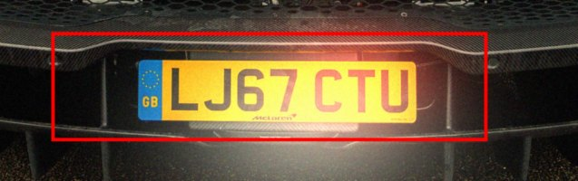
none
reads LJ6J
reads LJ6J
Which filter for which photo: night, small and big plates, any perspective view. Measured with the MATLAB project "License Plate Recognition Using SVM" (October 2026).
ဓာတ်ပုံအခြေအနေအလိုက် ဖီလ်တာရွေးချယ်ပုံ - ညဘက်၊ သေးငယ်/ကြီးသော နံပါတ်ပြား၊ မည်သည့်ထောင့်မှမဆို။ MATLAB project "License Plate Recognition Using SVM" ဖြင့် တိုင်းတာထားသည် (၂၀၂၆ အောက်တိုဘာ)။
A filter changes the pixels of the photo before the program looks for the plate. It helps only when the photo has the problem that the filter cures. The program already repairs brightness and contrast by itself, so most photos need no filter at all, and the wrong filter makes things worse: in the tests a Gaussian blur cost 3 of 16 plates, and on one of your own night photos an enlargement + sharpening turned a correct reading into a wrong one. For every situation this guide says which filters were tested, which helped and which did not.
ဖီလ်တာဆိုသည်မှာ ပရိုဂရမ်က နံပါတ်ပြားကို မရှာမီ ဓာတ်ပုံ၏ pixel များကို ပြောင်းပေးခြင်းဖြစ်သည်။ ဖီလ်တာက ကုသနိုင်သော ပြဿနာ ဓာတ်ပုံတွင် ရှိမှသာ အကျိုးရှိသည်။ ပရိုဂရမ်က အလင်းအမှောင်နှင့် contrast ကို ကိုယ်တိုင်ပြင်ပြီးသားဖြစ်သဖြင့် ဓာတ်ပုံအများစုသည် ဖီလ်တာ လုံးဝမလိုပါ၊ မှားသော ဖီလ်တာက ပိုဆိုးစေသည် - စမ်းသပ်မှုတွင် Gaussian blur က နံပါတ်ပြား ၁၆ ခုထဲ ၃ ခု ဆုံးရှုံးစေခဲ့ပြီး သင့်ကိုယ်ပိုင် ညဘက်ဓာတ်ပုံတစ်ပုံတွင် ချဲ့ခြင်း + ပြတ်သားစေခြင်းက မှန်သောအဖတ်ကို မှားစေခဲ့သည်။ အခြေအနေတစ်ခုချင်းစီအတွက် မည်သည့်ဖီလ်တာများကို စမ်းသပ်ခဲ့သည်၊ မည်သည်က ကူညီသည်၊ မည်သည်က မကူညီသည်ကို ဤလမ်းညွှန်က ပြောပြသည်။
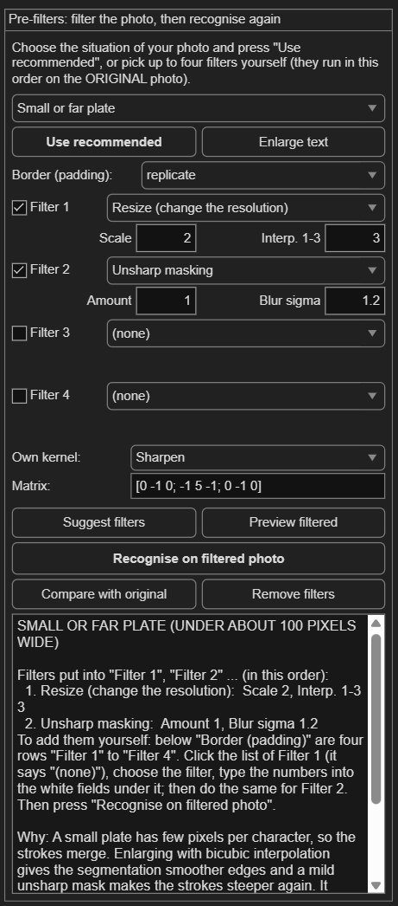
The filter panel on the right of the window. / ပြတင်းပေါက်၏ ညာဘက်ရှိ ဖီလ်တာ panel။
| Situation / အခြေအနေ | Filters (in this order) / ဖီလ်တာများ (အစဉ်လိုက်) | What was measured / တိုင်းတာမှု ရလဒ် |
|---|---|---|
| Night view (dark photo, lamp glare) ညဘက်မြင်ကွင်း (မှောင်သောဓာတ်ပုံ၊ မီးအလင်းရောင်ပြန်) | no filter / ဖီလ်တာမသုံးပါ | No filter beat doing nothing (without a filter: lit street 8 of 16, very dark 6 of 16); the program now also searches an equalised copy by itself. ဖီလ်တာမသုံးခြင်းကို မကျော်လွန်ပါ (ဖီလ်တာမသုံး - မီးထွန်းလမ်း ၈၊ အလွန်မှောင် ၆ ပုံ)၊ ပရိုဂရမ်က equalised မိတ္တူကိုပါ ကိုယ်တိုင်ရှာသည်။ |
| Small or far plate (under about 100 pixels wide) သေးငယ်သော သို့မဟုတ် ဝေးသော နံပါတ်ပြား (အကျယ် pixel ၁၀၀ အောက်) | 1. Resize (change the resolution): Scale 2, Interp. 1-3 3 2. Unsharp masking: Amount 1, Blur sigma 1.2 | 4 -> 6 plates of 16 (photos shrunk to 40 %). ၁၆ ပုံထဲ ၄ မှ ၆ ပုံ (၄၀% သို့ ချုံ့ထားသောပုံများ)။ |
| Big, close plate (over about 300 pixels wide) ကြီးသော၊ အနီးကပ် နံပါတ်ပြား (အကျယ် pixel ၃၀၀ ကျော်) | no filter / ဖီလ်တာမသုံးပါ | No filter; shrinking the photo cost 3 plates (8 -> 5). ဖီလ်တာမလို၊ ဓာတ်ပုံချုံ့လျှင် ၃ ပုံ ဆုံးရှုံး (၈ မှ ၅)။ |
| Angled plate (seen from the side) စောင်းနေသော နံပါတ်ပြား (ဘေးမှ ရိုက်ထားသည်) | 1. Resize (change the resolution): Scale 1.5, Interp. 1-3 3 2. Unsharp masking: Amount 1, Blur sigma 1.2 | Real oblique photos 1 -> 2 of 6; photos turned 30 degrees 5 -> 8, 50 degrees 4 -> 6 (of 16). တကယ်စောင်းသော ပုံ ၆ ပုံထဲ ၁ မှ ၂၊ ၃၀ ဒီဂရီလှည့်ထားသော ပုံ ၁၆ ပုံထဲ ၅ မှ ၈၊ ၅၀ ဒီဂရီ ၄ မှ ၆။ |
| Seen from above (high camera) အပေါ်မှ ရိုက်ထားသည် (ကင်မရာ မြင့်နေသည်) | 1. Local histogram equalisation (CLAHE): Tiles 8, Clip limit 3 | Simulated 30 degrees: local equalisation 5 -> 7 plates (fewer characters right); enlarging did harm (5 -> 4). ဖန်တီးထားသော ၃၀ ဒီဂရီ - local equalisation ဖြင့် ၅ မှ ၇ ပုံ (စာလုံးမှန်ကန်မှု နည်း)၊ ချဲ့လျှင် ပိုဆိုး (၅ မှ ၄)။ |
| Night, small or far plate (street lit) ညဘက်၊ သေးငယ်/ဝေးသော နံပါတ်ပြား (လမ်းမီးထွန်း) | 1. Resize (change the resolution): Scale 2, Interp. 1-3 3 2. Unsharp masking: Amount 1, Blur sigma 1.2 | Lit street: 5 -> 7 plates of 16; very dark: 4 -> 2 (worse). မီးထွန်းလမ်း - ၁၆ ပုံထဲ ၅ မှ ၇၊ အလွန်မှောင် - ၄ မှ ၂ (ပိုဆိုး)။ |
| Many cars in the photo (traffic) ကားများစွာပါသော ဓာတ်ပုံ (ယာဉ်ကြောပိတ်) | no filter / ဖီလ်တာမသုံးပါ | Ticks "Find ALL plates"; plates under 30 pixels are neither found nor read. "Find ALL plates" ကို အမှန်ခြစ်ပေးသည်၊ pixel ၃၀ အောက် နံပါတ်ပြားများကို မတွေ့၊ မဖတ်နိုင်ပါ။ |
| Many cars at night ညဘက် ကားများစွာ | no filter / ဖီလ်တာမသုံးပါ | Ticks "Find ALL plates"; your night traffic photo: 2 of 3 plates found. "Find ALL plates" ကို အမှန်ခြစ်ပေးသည်၊ သင့်ညဘက်ယာဉ်ကြောပိတ်ပုံ - နံပါတ်ပြား ၃ ခုထဲ ၂ ခုတွေ့။ |
| Any vehicle: motorcycle, scooter, bus, truck, taxi မည်သည့်ယာဉ်မဆို - မော်တော်ဆိုင်ကယ်၊ စကူတာ၊ ဘတ်စ်ကား၊ ထရပ်ကား၊ တက္ကစီ | 1. Resize (change the resolution): Scale 2, Interp. 1-3 3 2. Unsharp masking: Amount 1, Blur sigma 1.2 | Ticks "Find ALL plates" and enlarges 2 times; two-line motorcycle plates: only one row. "Find ALL plates" ကို အမှန်ခြစ်ပြီး ၂ ဆချဲ့ပေးသည်၊ မော်တော်ဆိုင်ကယ် နှစ်ကြောင်းနံပါတ်ပြား - တစ်ကြောင်းသာ။ |
| White and black dots (salt-and-pepper noise) အဖြူ/အနက် စက်ကလေးများ (salt-and-pepper noise) | 1. Median filter: Window 3 | 5 -> 7 plates of 16 (but 5 points fewer characters right). ၁၆ ပုံထဲ ၅ မှ ၇ ပုံ (သို့သော် စာလုံးမှန်ကန်မှု ၅ point ကျ)။ |
| Grainy photo (Gaussian noise, high ISO) အမှုန့်ပါသော ဓာတ်ပုံ (Gaussian noise၊ ISO မြင့်) | 1. Bilateral filter (edge-preserving): Spatial sigma 1.5, Range sigma 0.15 | 8 -> 9 plates; Gaussian blur 5, median 6. ၈ မှ ၉ ပုံ၊ Gaussian blur က ၅၊ median က ၆ ပုံ။ |
| Blurry photo (out of focus or shaky) ဝါးနေသော ဓာတ်ပုံ (focus လွဲ သို့မဟုတ် လက်တုန်) | 1. Unsharp masking: Amount 1.5, Blur sigma 1.5 | 5 -> 6 plates: small and not reliable. ၅ မှ ၆ ပုံ - အနည်းငယ်သာ၊ မယုံကြည်ရပါ။ |
| Low contrast (haze, fog, rain, dirty glass) contrast နည်းခြင်း (မြူ၊ မှော်ဝေ၊ မိုး၊ ညစ်ပေသော မှန်) | 1. Contrast stretching: Low % 1, High % 99 | 9 -> 9 plates; characters 81.2 -> 83.0 %. ၉ မှ ၉ ပုံ၊ စာလုံးမှန်ကန်မှု ၈၁.၂ မှ ၈၃.၀%။ |
| Shadow or uneven light across the photo အရိပ် သို့မဟုတ် ဓာတ်ပုံတစ်ခုလုံး အလင်းမညီမျှခြင်း | 1. Illumination correction: Blur sigma 40, Strength 1 | 6 -> 8 plates (characters 72.0 -> 70.3 %). ၆ မှ ၈ ပုံ (စာလုံးမှန်ကန်မှု ၇၂.၀ မှ ၇၀.၃%)။ |
| Glare or burnt-out plate (head-lamp, flash, sun) ရောင်ပြန်ဖြင့် ဖြူလွန်းသော နံပါတ်ပြား (မီးထိုး၊ ဖလက်ရှ်၊ နေရောင်) | no filter / ဖီလ်တာမသုံးပါ | Nothing to measure: take the photo again. တိုင်းစရာမရှိ - ဓာတ်ပုံကို ပြန်ရိုက်ပါ။ |
| Photo of a screen (pixel grid, moire) စခရင်ကို ဓာတ်ပုံရိုက်ထားခြင်း (pixel ကွက်၊ moire) | 1. Frequency low-pass (noise): Cut-off 0.5 | Not measured: open the original file instead. မတိုင်းထားပါ - မူရင်းဖိုင်ကို တိုက်ရိုက်ဖွင့်ပါ။ |
Honest limits. All numbers come from only 16 held-out test photos: a difference of one or two plates is a hint, not a proof. The night photos in the tests are simulated (darkened, orange lamp colour, noise), not real night photographs. No filter can create detail that was never recorded, bring back burnt-out white or read a plate that is hidden.
ရိုးရိုးသားသား ကန့်သတ်ချက်များ။ ကိန်းဂဏန်းအားလုံးသည် စမ်းသပ်ဓာတ်ပုံ ၁၆ ပုံမှသာ ရခြင်းဖြစ်သည် - နံပါတ်ပြား ၁ ခု ၂ ခု ကွာခြားခြင်းသည် သက်သေမဟုတ်ဘဲ အရိပ်အမြွက်သာ ဖြစ်သည်။ စမ်းသပ်မှုရှိ ညဘက်ဓာတ်ပုံများသည် ဖန်တီးထားသော (မှောင်အောင်လုပ်၊ လိမ္မော်ရောင်မီး၊ noise) ပုံများဖြစ်ပြီး တကယ့်ညဘက်ဓာတ်ပုံများ မဟုတ်ပါ။ မည်သည့်ဖီလ်တာကမျှ မမှတ်မိခဲ့သော အသေးစိတ်ကို ဖန်တီး၍ မရ၊ ဖြူလွန်းသွားသော နေရာကို ပြန်မရ၊ ဝှက်ထားသော နံပါတ်ပြားကို မဖတ်နိုင်ပါ။
Filters to put into Filter 1, Filter 2 ... / Filter 1၊ Filter 2 ... ထဲ ထည့်ရန် ဖီလ်တာများ
Why / အကြောင်းရင်း
The program repairs the brightness of a dark photo itself and also searches a locally equalised copy of it for the plate, so no filter is needed for the search. Filters added on top did not beat doing nothing on the test photos (they amplify the noise of a dark photo). What decides a night photo is the plate: about 100 pixels wide and not burnt out by a lamp. Plate smaller than that: choose "Night, small or far plate"; several cars: "Many cars at night".
ပရိုဂရမ်က မှောင်သောဓာတ်ပုံ၏ အလင်းအမှောင်ကို ကိုယ်တိုင်ပြင်ပြီး local equalisation လုပ်ထားသော မိတ္တူထဲတွင်လည်း နံပါတ်ပြားကို ရှာသဖြင့် ရှာဖွေရန် ဖီလ်တာမလိုပါ။ အပေါ်မှ ထပ်ထည့်သော ဖီလ်တာများသည် စမ်းသပ်ပုံများတွင် ဘာမှမလုပ်ခြင်းကို မကျော်လွန်ခဲ့ပါ (မှောင်သောပုံ၏ noise ကို တိုးစေသည်)။ ညဘက်ဓာတ်ပုံကို အဆုံးအဖြတ်ပေးသည်မှာ နံပါတ်ပြားကိုယ်တိုင်ဖြစ်သည် - အကျယ် pixel ၁၀၀ ခန့်ရှိပြီး မီးရောင်ကြောင့် ဖြူမလွန်ရပါ။ ထို့ထက်သေးလျှင် "Night, small or far plate"၊ ကားများစွာဆိုလျှင် "Many cars at night" ကိုရွေးပါ။
What was measured / တိုင်းတာမှု
Measured on the 16 test photos made to look like night (darkened, orange lamp cast, two glows, noise), exact plates / characters. Lit street: none 7 / 62.3 %, bilateral 6 / 60.5 %, local equalisation 6 / 58.0 %, bilateral + local equalisation 6 / 60.6 %, gamma 0.6 6 / 66.5 %, median 7 / 62.6 %. Very dark: none 6 / 61.9 %, bilateral 5 / 53.8 % (4 / 48.9 % with a fixed sigma_r), local equalisation 5 / 46.4 %, bilateral + local equalisation 4 / 44.8 %, gamma 0.6 6 / 60.1 %, median 6 / 51.0 %. With the final code (night search + character splitting) doing nothing reads 8 and 6 plates (68.6 % and 61.9 % of the characters); the filters above were compared with the earlier code. These are simulated, not real night photographs.
ညဘက်နှင့်တူအောင် ပြုလုပ်ထားသော စမ်းသပ်ဓာတ်ပုံ ၁၆ ပုံ (မှောင်အောင်လုပ်၊ လိမ္မော်ရောင် မီးအရောင်၊ မီးအလင်းနှစ်ခု၊ noise) ပေါ်တွင် တိုင်းတာမှု - ပုံမှန်ဖတ်မှန်သောပုံ / စာလုံးမှန်ကန်မှု။ မီးထွန်းသောလမ်း - ဖီလ်တာမသုံး ၇ / ၆၂.၃%၊ bilateral ၆ / ၆၀.၅%၊ local equalisation ၆ / ၅၈.၀%၊ bilateral + local equalisation ၆ / ၆၀.၆%၊ gamma 0.6 ၆ / ၆၆.၅%၊ median ၇ / ၆၂.၆%။ အလွန်မှောင် - ဖီလ်တာမသုံး ၆ / ၆၁.၉%၊ bilateral ၅ / ၅၃.၈% (sigma_r ပုံသေဖြင့် ၄ / ၄၈.၉%)၊ local equalisation ၅ / ၄၆.၄%၊ bilateral + local equalisation ၄ / ၄၄.၈%၊ gamma 0.6 ၆ / ၆၀.၁%၊ median ၆ / ၅၁.၀%။ နောက်ဆုံးကုဒ် (ညဘက်ရှာဖွေမှု + စာလုံးခွဲခြင်း) ဖြင့် ဘာမှမလုပ်လျှင် နံပါတ်ပြား ၈ နှင့် ၆ ပုံ ဖတ်နိုင်သည် (စာလုံး ၆၈.၆% နှင့် ၆၁.၉%)၊ အထက်ပါဖီလ်တာများကို အစောပိုင်းကုဒ်ဖြင့် နှိုင်းယှဉ်ခဲ့သည်။ ၎င်းတို့သည် ဖန်တီးထားသော စမ်းသပ်မှုများသာဖြစ်ပြီး တကယ့်ညဘက်ဓာတ်ပုံများ မဟုတ်ပါ။
Photo car_18 darkened like a lit street, orange lamp cast and noise (simulated). Red outline = plate accepted by the program.

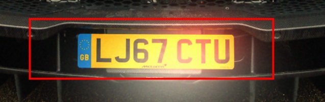
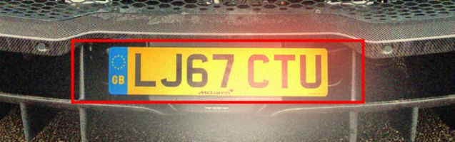
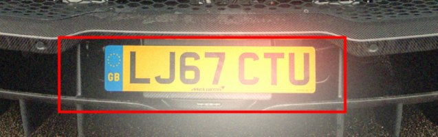
The same photo, very dark (simulated).
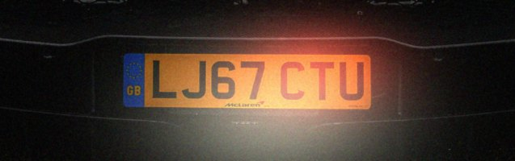
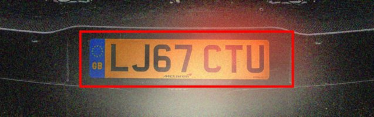
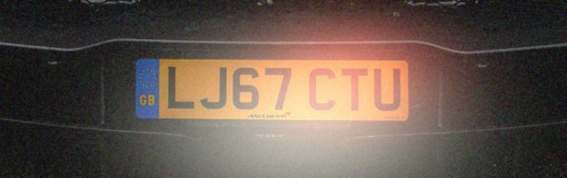
Filters to put into Filter 1, Filter 2 ... / Filter 1၊ Filter 2 ... ထဲ ထည့်ရန် ဖီလ်တာများ
To add them yourself: click the list of Filter 1 (it says "(none)"), choose the filter, type the numbers in brackets into the white fields under it, then do the same for Filter 2. Press "Recognise on filtered photo". / ကိုယ်တိုင်ထည့်လိုလျှင် - Filter 1 ၏ စာရင်း ("(none)" ဟုပြထားသည်) ကိုနှိပ်၍ ဖီလ်တာကိုရွေးပါ၊ ကွင်းထဲရှိ ဂဏန်းများကို အောက်ရှိ အဖြူအကွက်များထဲ ရိုက်ထည့်ပါ၊ ထို့နောက် Filter 2 ကိုလည်း ထိုနည်းတူလုပ်ပါ။ "Recognise on filtered photo" ကိုနှိပ်ပါ။
Why / အကြောင်းရင်း
A small plate has few pixels per character, so the strokes of the characters merge. Enlarging with bicubic interpolation gives the segmentation smoother edges to work with, and a mild unsharp mask makes the strokes steeper again. It cannot add detail: below about 40 pixels of plate width nothing helps. Better: get closer, or use 'Pick car' on a bigger photo.
နံပါတ်ပြားသေးလျှင် စာလုံးတစ်လုံးအတွက် pixel နည်းသဖြင့် စာကြောင်းများ ပေါင်းစပ်သွားတတ်သည်။ bicubic ဖြင့် ချဲ့လျှင် စာလုံးခွဲထုတ်ရာတွင် ပိုချောမွေ့သော အနားသတ်ရပြီး၊ unsharp mask က စာကြောင်းများကို ပြန်မတ်စေသည်။ အသေးစိတ်အသစ် မထည့်နိုင်ပါ - နံပါတ်ပြားအကျယ် pixel ၄၀ ခန့်အောက်တွင် ဘာမှမကူညီနိုင်ပါ။ ပိုကောင်းသည်မှာ - ပိုနီးအောင်ရိုက်ပါ၊ သို့မဟုတ် ပုံကြီးပေါ်တွင် 'Pick car' သုံးပါ။
What was measured / တိုင်းတာမှု
Measured on the 16 test photos shrunk to 40 % (plates 58 to 240 pixels wide), exact plates / characters: none 4 / 58.0 %, enlarge x2 bicubic 5 / 59.4 %, enlarge x2 + unsharp 6 / 63.2 %, unsharp only 5 / 62.4 %. About +2 plates; with 16 photos this is a hint.
၄၀% သို့ ချုံ့ထားသော စမ်းသပ်ဓာတ်ပုံ ၁၆ ပုံ (နံပါတ်ပြားအကျယ် pixel ၅၈ မှ ၂၄၀) ပေါ်တွင် တိုင်းတာမှု - ဖီလ်တာမသုံး ၄ / ၅၈.၀%၊ ၂ ဆချဲ့ (bicubic) ၅ / ၅၉.၄%၊ ၂ ဆချဲ့ + unsharp ၆ / ၆၃.၂%၊ unsharp သီးသန့် ၅ / ၆၂.၄%။ ပုံ ၂ ပုံခန့် ပိုမှန်သည် - ဓာတ်ပုံ ၁၆ ပုံသာဖြစ်သဖြင့် အရိပ်အမြွက်သာ။
Photo car_12 shrunk to 40 % (the plate is about 90 pixels wide).
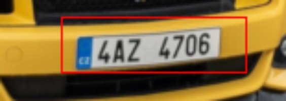
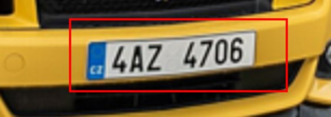
Photo car_09 shrunk to 40 % (the plate is about 114 pixels wide).
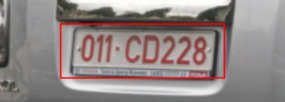
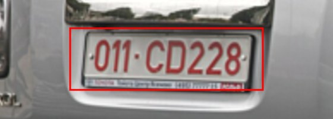
Filters to put into Filter 1, Filter 2 ... / Filter 1၊ Filter 2 ... ထဲ ထည့်ရန် ဖီလ်တာများ
Why / အကြောင်းရင်း
A big plate already has plenty of pixels per character; filtering only risks blurring or adding noise. Use no filter. Do not shrink the photo to save time: that was the worst choice in the test.
ကြီးသော နံပါတ်ပြားတွင် စာလုံးတစ်လုံးအတွက် pixel လုံလောက်ပြီးသားဖြစ်သည် - ဖီလ်တာသုံးလျှင် ဝါးသွားခြင်း၊ noise တိုးခြင်းသာ ဖြစ်နိုင်သည်။ ဖီလ်တာ မသုံးပါနှင့်။ အချိန်ချွေတာရန် ဓာတ်ပုံကို မချုံ့ပါနှင့် - စမ်းသပ်မှုတွင် အဆိုးဆုံး ရွေးချယ်မှုဖြစ်ခဲ့သည်။
What was measured / တိုင်းတာမှု
Measured on the 16 original test photos (1920 pixels wide), exact plates / characters: none 8 / 74.6 %, shrink to 0.5 5 / 61.4 %, Gaussian 3 x 3 7 / 73.7 %, unsharp masking 7 / 67.5 %.
မူရင်း စမ်းသပ်ဓာတ်ပုံ ၁၆ ပုံ (အကျယ် pixel ၁၉၂၀) ပေါ်တွင် တိုင်းတာမှု - ဖီလ်တာမသုံး ၈ / ၇၄.၆%၊ ၀.၅ ဆချုံ့ ၅ / ၆၁.၄%၊ Gaussian 3 x 3 ၇ / ၇၃.၇%၊ unsharp masking ၇ / ၆၇.၅%။
Filters to put into Filter 1, Filter 2 ... / Filter 1၊ Filter 2 ... ထဲ ထည့်ရန် ဖီလ်တာများ
To add them yourself: click the list of Filter 1 (it says "(none)"), choose the filter, type the numbers in brackets into the white fields under it, then do the same for Filter 2. Press "Recognise on filtered photo". / ကိုယ်တိုင်ထည့်လိုလျှင် - Filter 1 ၏ စာရင်း ("(none)" ဟုပြထားသည်) ကိုနှိပ်၍ ဖီလ်တာကိုရွေးပါ၊ ကွင်းထဲရှိ ဂဏန်းများကို အောက်ရှိ အဖြူအကွက်များထဲ ရိုက်ထည့်ပါ၊ ထို့နောက် Filter 2 ကိုလည်း ထိုနည်းတူလုပ်ပါ။ "Recognise on filtered photo" ကိုနှိပ်ပါ။
Why / အကြောင်းရင်း
An angled plate is mainly a shape problem: the characters are squeezed and slanted. The program straightens the plate itself (perspective correction), and no filter can do that; but enlarging 1.5 times gives the squeezed characters more pixels and a mild unsharp mask makes their strokes steeper. It helped on side views, but it is no cure for steep angles (from 50 degrees on most plates stay unreadable): photograph from the front if you can. Check with "Compare with original".
စောင်းနေသော နံပါတ်ပြားသည် အဓိကအားဖြင့် ပုံသဏ္ဌာန်ပြဿနာဖြစ်သည် - စာလုံးများ ညှစ်ပြီး စောင်းနေသည်။ ပရိုဂရမ်က နံပါတ်ပြားကို ကိုယ်တိုင်ဖြောင့်ပေးသည် (perspective ပြင်ခြင်း)၊ ဖီလ်တာက ထိုအလုပ်ကို မလုပ်နိုင်ပါ။ သို့သော် ၁.၅ ဆချဲ့လျှင် ညှစ်နေသောစာလုံးများ pixel ပိုရပြီး မျှတသော unsharp mask က စာလုံးမျဉ်းကြောင်းများကို ပိုတောက်ပစေသည်။ ဘေးမှရိုက်ထားသော ပုံများတွင် ကူညီခဲ့သော်လည်း မတ်စောင်းသောထောင့်ကို မကုနိုင်ပါ (၅၀ ဒီဂရီမှစ၍ နံပါတ်ပြားအများစု မဖတ်နိုင်ပါ) - ဖြစ်နိုင်လျှင် အရှေ့မှ ရိုက်ပါ။ "Compare with original" ဖြင့် စစ်ပါ။
What was measured / တိုင်းတာမှု
Plates read exactly of 16 (characters correct), no filter / enlarge x1.5 + unsharp (1, 1.2): the 6 real oblique test photos 1 / 2 of 6; the 16 test photos turned 30 degrees to the side 5 (56.1 %) / 8 (65.0 %); turned 50 degrees 4 (48.2 %) / 6 (58.4 %). On the front-view photos the plates went from 8 to 9 but the characters from 74.6 % to 71.5 %. The turned photos are simulations (homography).
၁၆ ပုံထဲ အတိအကျမှန်သော နံပါတ်ပြား (စာလုံးမှန်ကန်မှု)၊ ဖီလ်တာမသုံး / ၁.၅ ဆချဲ့ + unsharp (1, 1.2) - တကယ်စောင်းသော စမ်းသပ်ပုံ ၆ ပုံ ၁ / ၂ ပုံ၊ ဘေးသို့ ၃၀ ဒီဂရီ လှည့်ထားသော စမ်းသပ်ပုံ ၁၆ ပုံ ၅ (၅၆.၁%) / ၈ (၆၅.၀%)၊ ၅၀ ဒီဂရီ ၄ (၄၈.၂%) / ၆ (၅၈.၄%)။ အရှေ့မှရိုက်သော ပုံများတွင် နံပါတ်ပြား ၈ မှ ၉ ပုံဖြစ်သော်လည်း စာလုံးမှန်ကန်မှု ၇၄.၆% မှ ၇၁.၅% သို့ ကျသည်။ လှည့်ထားသော ပုံများသည် ဖန်တီးထားသော (homography) စမ်းသပ်မှုများဖြစ်သည်။
Filters to put into Filter 1, Filter 2 ... / Filter 1၊ Filter 2 ... ထဲ ထည့်ရန် ဖီလ်တာများ
To add them yourself: click the list of Filter 1 (it says "(none)"), choose the filter, type the numbers in brackets into the white fields under it, then do the same for Filter 2. Press "Recognise on filtered photo". / ကိုယ်တိုင်ထည့်လိုလျှင် - Filter 1 ၏ စာရင်း ("(none)" ဟုပြထားသည်) ကိုနှိပ်၍ ဖီလ်တာကိုရွေးပါ၊ ကွင်းထဲရှိ ဂဏန်းများကို အောက်ရှိ အဖြူအကွက်များထဲ ရိုက်ထည့်ပါ၊ ထို့နောက် Filter 2 ကိုလည်း ထိုနည်းတူလုပ်ပါ။ "Recognise on filtered photo" ကိုနှိပ်ပါ။
Why / အကြောင်းရင်း
From above the plate is squeezed vertically and the characters get short; the program straightens it itself. Local histogram equalisation gave more plates in the simulation but fewer correct characters, and enlarging + sharpening did harm here. Treat it as a try: press "Compare with original" and keep the filter only if the reading gets better.
အပေါ်မှ ရိုက်လျှင် နံပါတ်ပြားသည် ဒေါင်လိုက်ညှစ်ပြီး စာလုံးများ ပုပ်သွားသည်၊ ပရိုဂရမ်က ကိုယ်တိုင်ဖြောင့်ပေးသည်။ ဖန်တီးစမ်းသပ်မှုတွင် Local histogram equalisation က နံပါတ်ပြားပိုဖတ်နိုင်သော်လည်း မှန်သောစာလုံး နည်းသွားပြီး ချဲ့ခြင်း + ပြတ်သားစေခြင်းက ဤနေရာတွင် ပိုဆိုးစေသည်။ စမ်းကြည့်ရန်သာ ယူဆပါ - "Compare with original" ကိုနှိပ်ပြီး ဖတ်ရလဒ် ပိုကောင်းမှသာ ဖီလ်တာကို ထားပါ။
What was measured / တိုင်းတာမှု
The 16 test photos turned 30 degrees about the horizontal axis (simulated). Plates read exactly of 16 (characters correct): no filter 5 (72.7 %); local equalisation 7 (66.0 %); enlarge x1.5 + unsharp 4 (59.8 %).
စမ်းသပ်ပုံ ၁၆ ပုံကို အလျားလိုက်ဝင်ရိုးအလိုက် ၃၀ ဒီဂရီ လှည့်ထားသည် (ဖန်တီးထား)။ ၁၆ ပုံထဲ အတိအကျမှန်သော နံပါတ်ပြား (စာလုံးမှန်ကန်မှု) - ဖီလ်တာမသုံး ၅ (၇၂.၇%)၊ local equalisation ၇ (၆၆.၀%)၊ ၁.၅ ဆချဲ့ + unsharp ၄ (၅၉.၈%)။
Filters to put into Filter 1, Filter 2 ... / Filter 1၊ Filter 2 ... ထဲ ထည့်ရန် ဖီလ်တာများ
To add them yourself: click the list of Filter 1 (it says "(none)"), choose the filter, type the numbers in brackets into the white fields under it, then do the same for Filter 2. Press "Recognise on filtered photo". / ကိုယ်တိုင်ထည့်လိုလျှင် - Filter 1 ၏ စာရင်း ("(none)" ဟုပြထားသည်) ကိုနှိပ်၍ ဖီလ်တာကိုရွေးပါ၊ ကွင်းထဲရှိ ဂဏန်းများကို အောက်ရှိ အဖြူအကွက်များထဲ ရိုက်ထည့်ပါ၊ ထို့နောက် Filter 2 ကိုလည်း ထိုနည်းတူလုပ်ပါ။ "Recognise on filtered photo" ကိုနှိပ်ပါ။
Why / အကြောင်းရင်း
A small plate at night needs the same help as a small plate by day: enlarging 2 times gives the characters more pixels and a mild unsharp mask makes their strokes steeper. The program also searches an equalised copy of a dark photo by itself. Use it only when the street is lit: for a very dark photo enlarging made things worse. Below about 40 pixels of plate width nothing helps; a plate lit red by the tail lights with lamp glare on its characters (your dark.jpg) is located but not read.
ညဘက်တွင် သေးငယ်သော နံပါတ်ပြားသည် နေ့ဘက်နှင့် တူညီသော အကူအညီ လိုသည် - ၂ ဆချဲ့လျှင် စာလုံးများ pixel ပိုရပြီး မျှတသော unsharp mask က မျဉ်းကြောင်းများကို ပိုတောက်ပစေသည်။ ပရိုဂရမ်က မှောင်သောဓာတ်ပုံ၏ equalised မိတ္တူကိုလည်း ကိုယ်တိုင်ရှာသည်။ လမ်းမီးထွန်းသောအခါမှသာ သုံးပါ - အလွန်မှောင်သောပုံကို ချဲ့လျှင် ပိုဆိုးသွားသည်။ နံပါတ်ပြားအကျယ် pixel ၄၀ ခန့်အောက်တွင် ဘာမှမကူညီနိုင်ပါ၊ နောက်မီးများက အနီရောင်ထိုးထားပြီး စာလုံးများပေါ် မီးအလင်းရောင်ပြန်ရှိသော နံပါတ်ပြား (သင့် dark.jpg) ကို တွေ့သော်လည်း မဖတ်နိုင်ပါ။
What was measured / တိုင်းတာမှု
The 16 test photos shrunk to 40 % and made to look like a lit street at night: no filter 5 plates (49.8 % of the characters), enlarge x2 + unsharp 7 (63.3 %), plus gamma 0.6 5 (56.0 %). Very dark photos: no filter 4 (43.6 %), enlarge x2 + unsharp 2 (28.5 %), plus gamma 0.6 2 (21.1 %): enlarging a very dark photo does harm. Check with "Compare with original".
၄၀% သို့ ချုံ့ပြီး မီးထွန်းသောလမ်းညဘက်နှင့်တူအောင် လုပ်ထားသော စမ်းသပ်ဓာတ်ပုံ ၁၆ ပုံ - ဖီလ်တာမသုံး ၅ ပုံ (စာလုံး ၄၉.၈%)၊ ၂ ဆချဲ့ + unsharp ၇ ပုံ (၆၃.၃%)၊ gamma 0.6 ပါထည့်လျှင် ၅ ပုံ (၅၆.၀%)။ အလွန်မှောင်သောပုံများ - ဖီလ်တာမသုံး ၄ ပုံ (၄၃.၆%)၊ ၂ ဆချဲ့ + unsharp ၂ ပုံ (၂၈.၅%)၊ gamma 0.6 ပါထည့်လျှင် ၂ ပုံ (၂၁.၁%) - အလွန်မှောင်သောပုံကို ချဲ့လျှင် ပိုဆိုးသွားသည်။ "Compare with original" ဖြင့် စစ်ပါ။
Filters to put into Filter 1, Filter 2 ... / Filter 1၊ Filter 2 ... ထဲ ထည့်ရန် ဖီလ်တာများ
Why / အကြောင်းရင်း
Ticks "Find ALL plates": every plate the program accepts is boxed (red: 90 pixels wide or more, orange: smaller, reading unreliable) and listed with its reading; plate-like regions that could not be read get grey dashed boxes. On a road photo with far cars the plates are 20 to 30 pixels wide: no filter makes them readable. A bigger photo or "Pick car..." (tab 4 Plate) is the cure.
"Find ALL plates" ကို အမှန်ခြစ်ပေးသည် - ပရိုဂရမ်လက်ခံသော နံပါတ်ပြားတိုင်းကို ဘောက်စ်ခတ်ပြီး (အနီ - အကျယ် pixel ၉၀ နှင့်အထက်၊ လိမ္မော်ရောင် - ပိုသေးသဖြင့် အဖတ်မယုံကြည်ရ) ဖတ်ရလဒ်နှင့်တကွ စာရင်းပြသည်၊ မဖတ်နိုင်သော နံပါတ်ပြားနှင့်တူသည့်နေရာများကို မီးခိုးရောင်မျဉ်းပြတ်ဘောက်စ်ဖြင့် ပြသည်။ ဝေးသောကားများပါသည့် လမ်းဓာတ်ပုံတွင် နံပါတ်ပြားအကျယ် pixel ၂၀ မှ ၃၀ ဖြစ်သည် - မည်သည့်ဖီလ်တာကမျှ ဖတ်နိုင်အောင် မလုပ်ပေးနိုင်ပါ။ ပုံကြီးသော ဓာတ်ပုံ သို့မဟုတ် "Pick car..." (tab 4 Plate) က ကုသနည်းဖြစ်သည်။
What was measured / တိုင်းတာမှု
On the 16 test photos a region with a plate-SVM score of at least -0.3 contained the plate in 14 of 16 photos, also when shrunk to 40 %, with about 1 false region per photo. On your day traffic photo (640 x 480) the two nearest plates are only 23 and 26 pixels wide: nothing was found or read, with or without a filter (enlarging 2 and 3 times, gamma, local equalisation).
စမ်းသပ်ဓာတ်ပုံ ၁၆ ပုံတွင် plate-SVM ရမှတ် -0.3 နှင့်အထက်ရှိသော နေရာတွင် နံပါတ်ပြားပါသည်မှာ ၁၆ ပုံထဲ ၁၄ ပုံ (၄၀% သို့ ချုံ့ထားသော်လည်း)၊ ပုံတစ်ပုံလျှင် မှားသောနေရာ ၁ ခုခန့်။ သင့်နေ့ဘက်ယာဉ်ကြောပိတ်ဓာတ်ပုံ (၆၄၀ x ၄၈၀) တွင် အနီးဆုံး နံပါတ်ပြားနှစ်ခုမှာ pixel ၂၃ နှင့် ၂၆ သာရှိသည် - ဖီလ်တာပါ/မပါ (၂ ဆ၊ ၃ ဆချဲ့ခြင်း၊ gamma၊ local equalisation) ဘာမှမတွေ့၊ မဖတ်နိုင်ပါ။
Filters to put into Filter 1, Filter 2 ... / Filter 1၊ Filter 2 ... ထဲ ထည့်ရန် ဖီလ်တာများ
Why / အကြောင်းရင်း
Like "Many cars in the photo", for a dark photo: every plate is searched, and an equalised copy of the dark photo is searched automatically. No filter is recommended (none helped on dark photos). Plates that are small, lit red or hidden in lamp glare are often found but read wrongly or not at all.
"Many cars in the photo" ကဲ့သို့ပင် မှောင်သောဓာတ်ပုံအတွက် - နံပါတ်ပြားတိုင်းကို ရှာပြီး မှောင်သောဓာတ်ပုံ၏ equalised မိတ္တူကိုပါ အလိုအလျောက်ရှာသည်။ ဖီလ်တာ မအကြံပြုပါ (မှောင်သောပုံများတွင် မည်သည့်ဖီလ်တာကမျှ မကူညီခဲ့ပါ)။ သေးငယ်သော၊ အနီရောင်ထိုးသော၊ မီးအလင်းရောင်ပြန်ထဲ ပျောက်နေသော နံပါတ်ပြားများကို မကြာခဏ တွေ့သော်လည်း မှားဖတ်သည် သို့မဟုတ် လုံးဝမဖတ်နိုင်ပါ။
What was measured / တိုင်းတာမှု
One real night traffic photo of yours (1710 x 855, three plates): 2 plates found, the Mini T935AK797 (read right with every filter tried) and the dark SUV 6688 EP-2 (read 6688EP; 6688EP2 with local equalisation or enlarging 3 times, otherwise 6688F or 6688H); the white car (plate about 70 pixels) was missed. One photo is a hint only.
သင့်တကယ့်ညဘက်ယာဉ်ကြောပိတ်ဓာတ်ပုံတစ်ပုံ (၁၇၁၀ x ၈၅၅၊ နံပါတ်ပြား ၃ ခု) - ၂ ခုတွေ့သည်၊ Mini T935AK797 (စမ်းသည့်ဖီလ်တာအားလုံးဖြင့် မှန်) နှင့် မှောင်သော SUV 6688 EP-2 (6688EP ဟုဖတ်၊ local equalisation သို့မဟုတ် ၃ ဆချဲ့လျှင် 6688EP2၊ မဟုတ်လျှင် 6688F သို့မဟုတ် 6688H)၊ ကားဖြူ (နံပါတ်ပြား pixel ၇၀ ခန့်) ကို လွတ်သွားသည်။ ဓာတ်ပုံတစ်ပုံသာဖြစ်၍ အရိပ်အမြွက်သာ။
Filters to put into Filter 1, Filter 2 ... / Filter 1၊ Filter 2 ... ထဲ ထည့်ရန် ဖီလ်တာများ
To add them yourself: click the list of Filter 1 (it says "(none)"), choose the filter, type the numbers in brackets into the white fields under it, then do the same for Filter 2. Press "Recognise on filtered photo". / ကိုယ်တိုင်ထည့်လိုလျှင် - Filter 1 ၏ စာရင်း ("(none)" ဟုပြထားသည်) ကိုနှိပ်၍ ဖီလ်တာကိုရွေးပါ၊ ကွင်းထဲရှိ ဂဏန်းများကို အောက်ရှိ အဖြူအကွက်များထဲ ရိုက်ထည့်ပါ၊ ထို့နောက် Filter 2 ကိုလည်း ထိုနည်းတူလုပ်ပါ။ "Recognise on filtered photo" ကိုနှိပ်ပါ။
Why / အကြောင်းရင်း
Ticks "Find ALL plates", because several vehicles are in the photo, and enlarges the photo 2 times: the small plate of a scooter or a far bus only shows up after that. The search is the same as for cars (trained on car plates). Two-line motorcycle plates are not supported: only one row is found and read. Buses and trucks with a car-like plate are treated like cars (not measured, no test photos). Also, a road sign with real letters can be read as a plate (a "NO TURN ON RED" sign gave TURN).
ဓာတ်ပုံတွင် ယာဉ်များစွာပါသဖြင့် "Find ALL plates" ကို အမှန်ခြစ်ပေးပြီး ဓာတ်ပုံကို ၂ ဆချဲ့ပေးသည် - စကူတာ သို့မဟုတ် ဝေးသော ဘတ်စ်ကား၏ သေးငယ်သော နံပါတ်ပြားသည် ချဲ့ပြီးမှသာ ပေါ်လာသည်။ ရှာဖွေပုံသည် ကားများအတွက်နှင့် တူညီသည် (ကားနံပါတ်ပြားများဖြင့် လေ့ကျင့်ထားသည်)။ မော်တော်ဆိုင်ကယ်၏ နှစ်ကြောင်းနံပါတ်ပြားကို မထောက်ပံ့ပါ - တစ်ကြောင်းသာ တွေ့၍ ဖတ်သည်။ ကားနံပါတ်ပြားနှင့်တူသော ဘတ်စ်ကား၊ ထရပ်ကားများကို ကားကဲ့သို့ ဆက်ဆံသည် (မတိုင်းထားပါ၊ စမ်းသပ်ဓာတ်ပုံ မရှိ)။ ထို့ပြင် စာလုံးအစစ်ပါသော လမ်းပြဆိုင်းဘုတ်ကို နံပါတ်ပြားအဖြစ် ဖတ်မိနိုင်သည် ("NO TURN ON RED" ဆိုင်းဘုတ်က TURN ဟု ဖတ်ခဲ့သည်)။
What was measured / တိုင်းတာမှု
Your Indian street photo: without a filter 1 plate read (the taxi, KA53C6332 for KA53C6932, one character wrong); with enlarge x2 + unsharp 2 (the taxi, KA53C63321, and the upper row of the two-line scooter plate KA02K read as K402X). One photo: a hint only.
သင့်အိန္ဒိယလမ်းဓာတ်ပုံ - ဖီလ်တာမသုံးလျှင် နံပါတ်ပြား ၁ ခု ဖတ်ရ (တက္ကစီ၊ KA53C6932 အစား KA53C6332၊ စာလုံးတစ်လုံးမှား)၊ ၂ ဆချဲ့ + unsharp ဖြင့် ၂ ခု (တက္ကစီ KA53C63321 နှင့် နှစ်ကြောင်းစကူတာနံပါတ်ပြား၏ အပေါ်ကြောင်း KA02K ကို K402X ဟုဖတ်)။ ဓာတ်ပုံတစ်ပုံသာဖြစ်၍ အရိပ်အမြွက်သာ။
Filters to put into Filter 1, Filter 2 ... / Filter 1၊ Filter 2 ... ထဲ ထည့်ရန် ဖီလ်တာများ
To add them yourself: click the list of Filter 1 (it says "(none)"), choose the filter, type the numbers in brackets into the white fields under it, then do the same for Filter 2. Press "Recognise on filtered photo". / ကိုယ်တိုင်ထည့်လိုလျှင် - Filter 1 ၏ စာရင်း ("(none)" ဟုပြထားသည်) ကိုနှိပ်၍ ဖီလ်တာကိုရွေးပါ၊ ကွင်းထဲရှိ ဂဏန်းများကို အောက်ရှိ အဖြူအကွက်များထဲ ရိုက်ထည့်ပါ၊ ထို့နောက် Filter 2 ကိုလည်း ထိုနည်းတူလုပ်ပါ။ "Recognise on filtered photo" ကိုနှိပ်ပါ။
Why / အကြောင်းရင်း
Isolated white or black dots cannot be the middle value of their neighbours, so a 3 x 3 median removes them and keeps the edges of the characters. Use 5 x 5 only when more than 8 % of the pixels are dots.
ခွဲထွက်နေသော အဖြူ/အနက် စက်ကလေးများသည် အနီးအနား pixel များ၏ အလယ်တန်ဖိုး မဖြစ်နိုင်သဖြင့် 3 x 3 median က ဖယ်ရှားပေးပြီး စာလုံးအနားသတ်များကို ထိန်းထားသည်။ pixel ၈% ကျော်သည် စက်ကလေးဖြစ်မှသာ 5 x 5 သုံးပါ။
What was measured / တိုင်းတာမှု
Measured: 5 exact plates of 16 without, 7 with the median (but 68.6 % -> 63.3 % of the characters).
တိုင်းတာမှု - median မသုံးလျှင် ၁၆ ပုံထဲ ၅ ပုံ၊ သုံးလျှင် ၇ ပုံ မှန်သည် (သို့သော် စာလုံးမှန်ကန်မှု ၆၈.၆% မှ ၆၃.၃% သို့ ကျ)။
Photo car_18 with 5 % white and black dots. It is read correctly even without a filter: moderate noise rarely breaks the recogniser, so a filter matters only for harder photos.
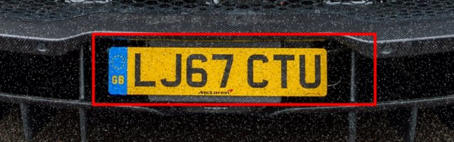
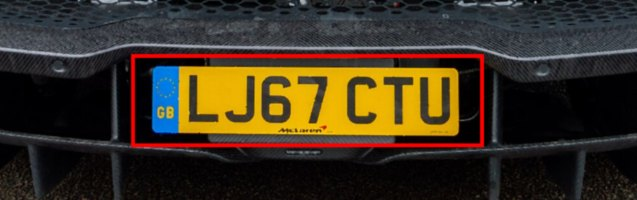
Filters to put into Filter 1, Filter 2 ... / Filter 1၊ Filter 2 ... ထဲ ထည့်ရန် ဖီလ်တာများ
To add them yourself: click the list of Filter 1 (it says "(none)"), choose the filter, type the numbers in brackets into the white fields under it, then do the same for Filter 2. Press "Recognise on filtered photo". / ကိုယ်တိုင်ထည့်လိုလျှင် - Filter 1 ၏ စာရင်း ("(none)" ဟုပြထားသည်) ကိုနှိပ်၍ ဖီလ်တာကိုရွေးပါ၊ ကွင်းထဲရှိ ဂဏန်းများကို အောက်ရှိ အဖြူအကွက်များထဲ ရိုက်ထည့်ပါ၊ ထို့နောက် Filter 2 ကိုလည်း ထိုနည်းတူလုပ်ပါ။ "Recognise on filtered photo" ကိုနှိပ်ပါ။
Why / အကြောင်းရင်း
Grain changes every pixel a little; a median would round off thin strokes and a Gaussian blur would smear them. The bilateral filter averages only neighbours of similar brightness, so flat areas become clean and the strokes stay sharp.
အမှုန့်သည် pixel တိုင်းကို နည်းနည်းစီ ပြောင်းသည် - median က ပါးသောစာကြောင်းများကို ဝိုင်းစေပြီး Gaussian က ဝါးစေသည်။ bilateral filter သည် အလင်းအမှောင် တူသော အနီးအနား pixel များကိုသာ ပျမ်းမျှယူသဖြင့် ညီညာသောနေရာ သန့်လာပြီး စာကြောင်းများ ပြတ်သားဆဲဖြစ်သည်။
What was measured / တိုင်းတာမှု
Measured: 8 -> 9 exact plates of 16 with bilateral; Gaussian 5x5 gave 5 and median 6.
တိုင်းတာမှု - bilateral ဖြင့် ၁၆ ပုံထဲ ၈ မှ ၉ ပုံသို့ တိုး၊ Gaussian 5x5 က ၅ ပုံ၊ median က ၆ ပုံသာ။
Photo car_18 with Gaussian noise (sigma 0.06). Read correctly even without a filter, see above.
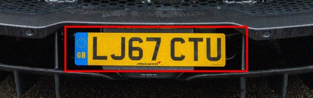
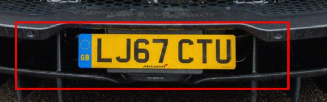
Filters to put into Filter 1, Filter 2 ... / Filter 1၊ Filter 2 ... ထဲ ထည့်ရန် ဖီလ်တာများ
To add them yourself: click the list of Filter 1 (it says "(none)"), choose the filter, type the numbers in brackets into the white fields under it, then do the same for Filter 2. Press "Recognise on filtered photo". / ကိုယ်တိုင်ထည့်လိုလျှင် - Filter 1 ၏ စာရင်း ("(none)" ဟုပြထားသည်) ကိုနှိပ်၍ ဖီလ်တာကိုရွေးပါ၊ ကွင်းထဲရှိ ဂဏန်းများကို အောက်ရှိ အဖြူအကွက်များထဲ ရိုက်ထည့်ပါ၊ ထို့နောက် Filter 2 ကိုလည်း ထိုနည်းတူလုပ်ပါ။ "Recognise on filtered photo" ကိုနှိပ်ပါ။
Why / အကြောင်းရင်း
Unsharp masking makes the blurred edges steeper; Richardson-Lucy deblurring tries to reverse a Gaussian blur. Honest answer: the gain is small and not reliable, and motion blur is not repaired. Take the photo again if you can.
unsharp masking က ဝါးနေသော အနားသတ်များကို ပိုမတ်စေသည်၊ Richardson-Lucy က Gaussian ဝါးမှုကို ပြန်ပြောင်းရန် ကြိုးစားသည်။ ရိုးရိုးသားသားပြောရလျှင် - တိုးတက်မှု နည်းပြီး မမှန်ကန်၊ လှုပ်ရှားမှုကြောင့်ဝါးခြင်းကို မပြင်နိုင်ပါ။ ဖြစ်နိုင်လျှင် ပြန်ရိုက်ပါ။
What was measured / တိုင်းတာမှု
Measured: 5 exact plates of 16 without; unsharp 6, Richardson-Lucy 5 (characters 64.7 % -> 62.4 % and 66.4 %).
တိုင်းတာမှု - ဖီလ်တာမသုံးလျှင် ၁၆ ပုံထဲ ၅ ပုံ၊ unsharp ၆ ပုံ၊ Richardson-Lucy ၅ ပုံ (စာလုံးမှန်ကန်မှု ၆၄.၇% မှ ၆၂.၄% နှင့် ၆၆.၄%)။
Photo car_18 out of focus (Gaussian blur, sigma 2). Read correctly even without a filter.
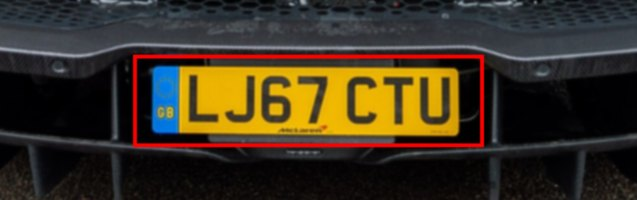
Filters to put into Filter 1, Filter 2 ... / Filter 1၊ Filter 2 ... ထဲ ထည့်ရန် ဖီလ်တာများ
To add them yourself: click the list of Filter 1 (it says "(none)"), choose the filter, type the numbers in brackets into the white fields under it, then do the same for Filter 2. Press "Recognise on filtered photo". / ကိုယ်တိုင်ထည့်လိုလျှင် - Filter 1 ၏ စာရင်း ("(none)" ဟုပြထားသည်) ကိုနှိပ်၍ ဖီလ်တာကိုရွေးပါ၊ ကွင်းထဲရှိ ဂဏန်းများကို အောက်ရှိ အဖြူအကွက်များထဲ ရိုက်ထည့်ပါ၊ ထို့နောက် Filter 2 ကိုလည်း ထိုနည်းတူလုပ်ပါ။ "Recognise on filtered photo" ကိုနှိပ်ပါ။
Why / အကြောင်းရင်း
Everything lies in a narrow band of grey levels. Stretching the 1 % to 99 % range to full black and white restores the difference between the strokes and the plate. The program does this by itself for very flat photos, so the filter is mostly for looking.
အရာအားလုံး grey level ကျဉ်းကျဉ်းလေးအတွင်း ရှိနေသည်။ ၁% မှ ၉၉% အကွာအဝေးကို အနက်/အဖြူ အပြည့်သို့ ဆွဲဆန့်လျှင် စာကြောင်းနှင့် နံပါတ်ပြားကြား ကွာခြားမှု ပြန်ရသည်။ အလွန်ပြားချပ်သော ပုံများအတွက် ပရိုဂရမ်က ကိုယ်တိုင်လုပ်ပေးသဖြင့် ဤဖီလ်တာသည် အများအားဖြင့် ကြည့်ရန်သာ။
What was measured / တိုင်းတာမှု
Measured: 9 exact plates of 16 both ways; characters 81.2 % -> 83.0 %.
တိုင်းတာမှု - နှစ်မျိုးလုံး ၁၆ ပုံထဲ ၉ ပုံ မှန်သည်၊ စာလုံးမှန်ကန်မှု ၈၁.၂% မှ ၈၃.၀%။
Photo car_18 with the contrast squeezed to 30 %. Read correctly even without a filter.
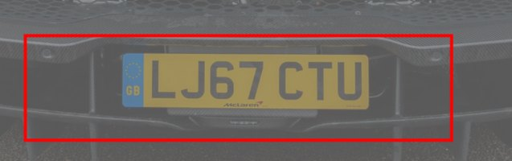
Filters to put into Filter 1, Filter 2 ... / Filter 1၊ Filter 2 ... ထဲ ထည့်ရန် ဖီလ်တာများ
To add them yourself: click the list of Filter 1 (it says "(none)"), choose the filter, type the numbers in brackets into the white fields under it, then do the same for Filter 2. Press "Recognise on filtered photo". / ကိုယ်တိုင်ထည့်လိုလျှင် - Filter 1 ၏ စာရင်း ("(none)" ဟုပြထားသည်) ကိုနှိပ်၍ ဖီလ်တာကိုရွေးပါ၊ ကွင်းထဲရှိ ဂဏန်းများကို အောက်ရှိ အဖြူအကွက်များထဲ ရိုက်ထည့်ပါ၊ ထို့နောက် Filter 2 ကိုလည်း ထိုနည်းတူလုပ်ပါ။ "Recognise on filtered photo" ကိုနှိပ်ပါ။
Why / အကြောင်းရင်း
A shadow across the plate hides the strokes on the dark side. Dividing by the slowly changing light brings both sides to the same level. Local histogram equalisation is the alternative. Do not add a gamma: the program already repairs the overall brightness.
နံပါတ်ပြားပေါ်ဖြတ်သော အရိပ်က မှောင်သောဘက်ရှိ စာကြောင်းများကို ဖုံးသည်။ ဖြည်းဖြည်းပြောင်းသော အလင်းဖြင့် စားလျှင် နှစ်ဖက်စလုံး အဆင့်တူလာသည်။ အစားထိုးနည်းမှာ local histogram equalisation ဖြစ်သည်။ gamma မထည့်ပါနှင့် - ပရိုဂရမ်က အလင်းအမှောင်ကို ကိုယ်တိုင်ပြင်ပြီးသားဖြစ်သည်။
What was measured / တိုင်းတာမှု
Measured: 6 exact plates of 16 without, 8 with illumination correction (characters 72.0 % -> 70.3 %). A suggested gamma made it worse (4 of 16).
တိုင်းတာမှု - ဖီလ်တာမသုံးလျှင် ၁၆ ပုံထဲ ၆ ပုံ၊ illumination correction ဖြင့် ၈ ပုံ (စာလုံးမှန်ကန်မှု ၇၂.၀% မှ ၇၀.၃%)။ gamma အကြံပြုချက်က ပိုဆိုးစေသည် (၁၆ ပုံထဲ ၄ ပုံ)။
Photo car_18 with the right side 4 times darker. Read correctly even without a filter.
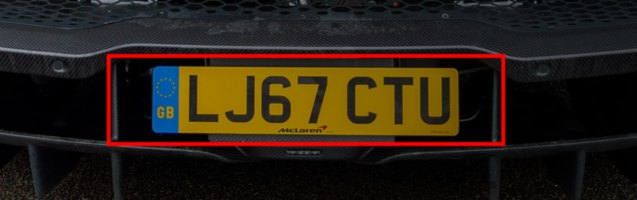
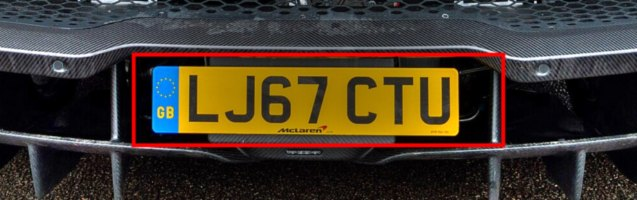
Filters to put into Filter 1, Filter 2 ... / Filter 1၊ Filter 2 ... ထဲ ထည့်ရန် ဖီလ်တာများ
Why / အကြောင်းရင်း
Pixels that are pure white carry no information any more: no filter can bring the characters back. The program refuses regions with more than a third saturated pixels (penalty). Re-take the photo from another angle or without flash.
အဖြူစစ်စစ်ဖြစ်သွားသော pixel များတွင် အချက်အလက် မကျန်တော့ပါ - ဖီလ်တာဖြင့် စာလုံးများကို ပြန်မရနိုင်ပါ။ pixel သုံးပုံတစ်ပုံကျော် ဖြူလွန်းသည့် နေရာများကို ပရိုဂရမ်က ပယ်သည် (penalty)။ အခြားထောင့်မှ သို့မဟုတ် ဖလက်ရှ်မသုံးဘဲ ပြန်ရိုက်ပါ။
What was measured / တိုင်းတာမှု
Not a filter problem; nothing to measure.
ဖီလ်တာပြဿနာ မဟုတ်သဖြင့် တိုင်းတာစရာ မရှိပါ။
Filters to put into Filter 1, Filter 2 ... / Filter 1၊ Filter 2 ... ထဲ ထည့်ရန် ဖီလ်တာများ
To add them yourself: click the list of Filter 1 (it says "(none)"), choose the filter, type the numbers in brackets into the white fields under it, then do the same for Filter 2. Press "Recognise on filtered photo". / ကိုယ်တိုင်ထည့်လိုလျှင် - Filter 1 ၏ စာရင်း ("(none)" ဟုပြထားသည်) ကိုနှိပ်၍ ဖီလ်တာကိုရွေးပါ၊ ကွင်းထဲရှိ ဂဏန်းများကို အောက်ရှိ အဖြူအကွက်များထဲ ရိုက်ထည့်ပါ၊ ထို့နောက် Filter 2 ကိုလည်း ထိုနည်းတူလုပ်ပါ။ "Recognise on filtered photo" ကိုနှိပ်ပါ။
Why / အကြောင်းရင်း
A camera pointed at a monitor records the monitor's own pixel grid and colour fringes. They are regular and very fine, so a low-pass filter in the frequency domain removes them. Best of all: do not photograph the screen; open the original image file in the app.
မော်နီတာကို ကင်မရာဖြင့်ရိုက်လျှင် မော်နီတာ၏ pixel ကွက်နှင့် အရောင်အနားများပါ မှတ်မိသွားသည်။ ၎င်းတို့သည် ပုံမှန်ပြီး အလွန်သေးသဖြင့် ကြိမ်နှုန်းဒိုမိန်းရှိ low-pass filter က ဖယ်ရှားနိုင်သည်။ အကောင်းဆုံးမှာ - စခရင်ကို မရိုက်ဘဲ မူရင်းပုံဖိုင်ကို app တွင် တိုက်ရိုက်ဖွင့်ပါ။
What was measured / တိုင်းတာမှု
Not measured (no test photos of screens); a reasoned recommendation only.
မတိုင်းတာရသေးပါ (စခရင်ဓာတ်ပုံ စမ်းသပ်ရန် မရှိ)၊ အကြောင်းပြချက်အရ အကြံပြုချက်သာဖြစ်သည်။
A plate seen from the side or from above is squeezed and slanted. The program straightens it by itself (perspective correction with a homography) whenever the detected plate looks skewed; no filter can do that. To see what filters add at different views, the 16 test photos were turned with a homography about the vertical axis (yaw: the car is seen from the side) and about the horizontal axis (pitch: seen from above) and read again, with and without a filter.
ဘေးမှ သို့မဟုတ် အပေါ်မှ မြင်ရသော နံပါတ်ပြားသည် ညှစ်ပြီး စောင်းနေသည်။ တွေ့ရှိသော နံပါတ်ပြား စောင်းနေသည်ဟု ထင်ရလျှင် ပရိုဂရမ်က ကိုယ်တိုင်ဖြောင့်ပေးသည် (homography ဖြင့် perspective ပြင်ခြင်း)၊ ဖီလ်တာက ထိုအလုပ်ကို မလုပ်နိုင်ပါ။ ရိုက်ထောင့်အမျိုးမျိုးတွင် ဖီလ်တာက ဘာထပ်ပေးသည်ကို ကြည့်ရန် စမ်းသပ်ဓာတ်ပုံ ၁၆ ပုံကို homography ဖြင့် ဒေါင်လိုက်ဝင်ရိုး (yaw - ကားကို ဘေးမှမြင်ရ) နှင့် အလျားလိုက်ဝင်ရိုး (pitch - အပေါ်မှမြင်ရ) ပတ်၍ လှည့်ပြီး ဖီလ်တာပါ/မပါ ပြန်ဖတ်ခဲ့သည်။
Plates read exactly, of the 16 test photos turned into that view (share of correct characters in brackets): / ထိုရိုက်ထောင့်သို့ လှည့်ထားသော စမ်းသပ်ဓာတ်ပုံ ၁၆ ပုံထဲ အတိအကျ မှန်သော နံပါတ်ပြား (စာလုံးမှန်ကန်မှု ရာခိုင်နှုန်းကို ကွင်းထဲတွင်):
| View / ရိုက်ထောင့် | no filter | CLAHE | enlarge x1.5 + unsharp |
|---|---|---|---|
| frontal (as photographed) | 8/16 (74.6 %) | 9/16 (70.7 %) | 9/16 (71.5 %) |
| seen from the side, 30 degrees | 5/16 (56.1 %) | 7/16 (70.2 %) | 8/16 (65.0 %) |
| seen from the side, 50 degrees | 4/16 (48.2 %) | 3/16 (50.6 %) | 6/16 (58.4 %) |
| seen from above, 30 degrees | 5/16 (72.7 %) | 7/16 (66.0 %) | 4/16 (59.8 %) |
Reading the table: without a filter the plates read fall from 8 of 16 (front) to 5 at 30 degrees, 4 at 50 degrees and 5 from above. From the side, enlarging 1.5 times + mild unsharp masking gave the most plates (8 and 6); local equalisation helped at 30 degrees only. From above, local equalisation gave more plates (7) but fewer correct characters, and enlarging + sharpening did harm (4). Gains are one to three plates out of 16 and the characters sometimes went down: a hint, not a proof. The front row for the two filters comes from the earlier run on the original photos. The 6 real oblique photos of the test set read 1 of 6 without a filter, 2 of 6 with enlarging + unsharp masking and 3 of 6 with local equalisation.
ဇယားကို ဖတ်ပုံ - ဖီလ်တာမသုံးလျှင် ဖတ်နိုင်သော နံပါတ်ပြားသည် အရှေ့မှ ၁၆ ပုံထဲ ၈ ပုံမှ ၃၀ ဒီဂရီတွင် ၅၊ ၅၀ ဒီဂရီတွင် ၄၊ အပေါ်မှ ၅ ပုံသို့ ကျသည်။ ဘေးမှဆိုလျှင် ၁.၅ ဆချဲ့ + မျှတသော unsharp masking က အများဆုံးဖတ်နိုင်စေသည် (၈ နှင့် ၆)၊ local equalisation က ၃၀ ဒီဂရီတွင်သာ ကူညီသည်။ အပေါ်မှဆိုလျှင် local equalisation က နံပါတ်ပြားပိုဖတ်နိုင်သော်လည်း (၇) မှန်သောစာလုံးနည်းပြီး ချဲ့ခြင်း + ပြတ်သားစေခြင်းက ပိုဆိုးစေသည် (၄)။ တိုးတက်မှုမှာ ၁၆ ပုံထဲ ၁ မှ ၃ ပုံသာဖြစ်ပြီး စာလုံးမှန်ကန်မှု တခါတရံ ကျသည် - အရိပ်အမြွက်သာ၊ သက်သေမဟုတ်ပါ။ ဖီလ်တာနှစ်မျိုးအတွက် အရှေ့တန်းသည် မူရင်းပုံများပေါ် အစောပိုင်း စမ်းသပ်မှုမှ ဖြစ်သည်။ စမ်းသပ်ပုံထဲရှိ တကယ်စောင်းသော ပုံ ၆ ပုံသည် ဖီလ်တာမသုံးလျှင် ၆ ပုံထဲ ၁၊ ချဲ့ + unsharp ဖြင့် ၂၊ local equalisation ဖြင့် ၃ ပုံ ဖတ်နိုင်သည်။
as photographed
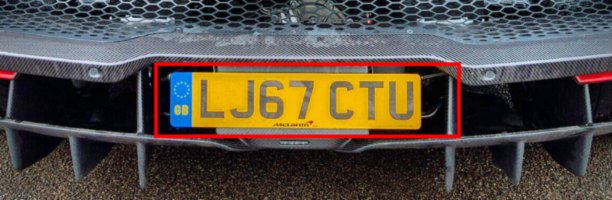
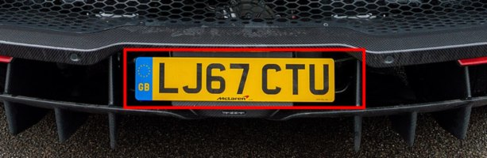
from the side 30 deg
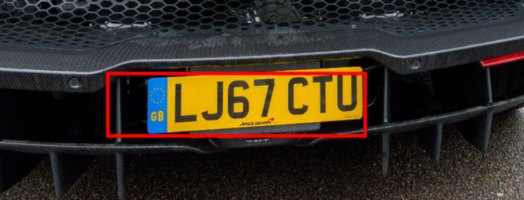
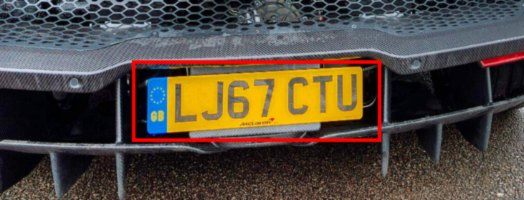
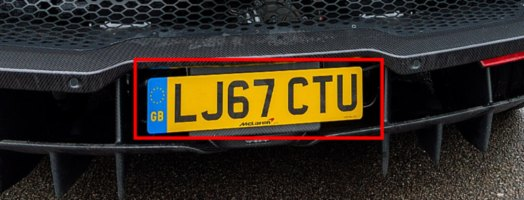
from the side 50 deg
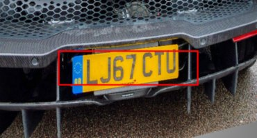
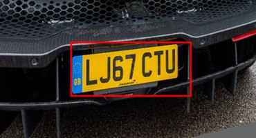
from above 30 deg
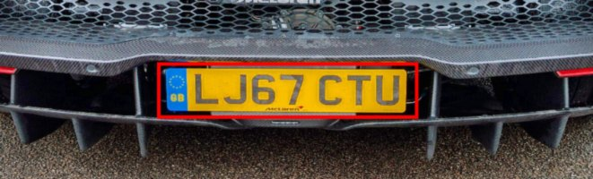
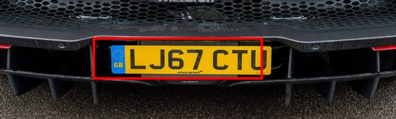
as photographed
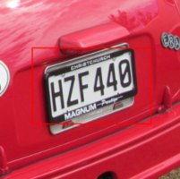
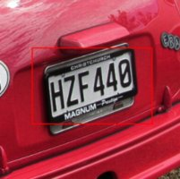
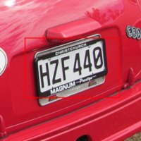
from the side 30 deg
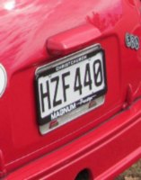
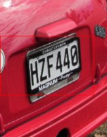
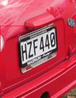
from the side 50 deg
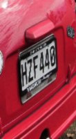
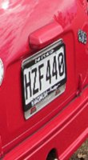
from above 30 deg
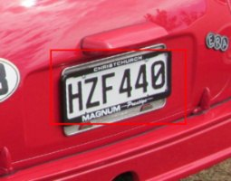
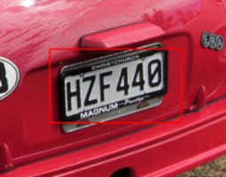
What to do at any view. (1) Photograph the plate from the front whenever you can: at 50 degrees the plate is only 64 % as wide, and most readings fail whatever the filter. (2) Seen from the side (up to about 40 degrees): choose the situation "Angled plate" and press "Use recommended" (enlarge 1.5 + unsharp masking). (3) Seen from above: choose "Seen from above" (local equalisation), then press "Compare with original" and keep the filter only if the reading gets better. (4) Never use blur filters (mean, Gaussian) on an angled plate: the squeezed characters have even thinner strokes. (5) With several cars in the photo use "Pick car..." (tab 4 Plate), so the program straightens the plate of the car you want.
မည်သည့်ရိုက်ထောင့်တွင်မဆို ဘာလုပ်ရမလဲ။ (၁) ဖြစ်နိုင်လျှင် နံပါတ်ပြားကို အရှေ့မှ ရိုက်ပါ - ၅၀ ဒီဂရီတွင် နံပါတ်ပြားအကျယ်သည် ၆၄% သာရှိပြီး ဖီလ်တာမည်သို့ပင်ဖြစ်စေ အဖတ်အများစု မအောင်မြင်ပါ။ (၂) ဘေးမှ (၄၀ ဒီဂရီခန့်အထိ) - "Angled plate" အခြေအနေကိုရွေးပြီး "Use recommended" ကိုနှိပ်ပါ (၁.၅ ဆချဲ့ + unsharp masking)။ (၃) အပေါ်မှ - "Seen from above" (local equalisation) ကိုရွေးပြီး "Compare with original" ကိုနှိပ်ကာ ဖတ်ရလဒ်ပိုကောင်းမှသာ ဖီလ်တာကို ထားပါ။ (၄) စောင်းနေသော နံပါတ်ပြားတွင် ဝါးစေသော ဖီလ်တာများ (mean, Gaussian) ကို ဘယ်တော့မှ မသုံးပါနှင့် - ညှစ်နေသော စာလုံးများ၏ မျဉ်းကြောင်းများ ပိုပါးနေသည်။ (၅) ဓာတ်ပုံတွင် ကားများစွာရှိလျှင် "Pick car..." (tab 4 Plate) ကိုသုံးပါ၊ သို့မှ ပရိုဂရမ်က သင်ရွေးသောကား၏ နံပါတ်ပြားကို ဖြောင့်ပေးမည်။
Photo with several cars: choose "Many cars in the photo" or "Many cars at night" and press "Use recommended" (this ticks "Find ALL plates" in tab 4), then "Recognise on filtered photo". Every plate the program accepts gets a box in the photo (red: 90 pixels wide or more; orange: smaller, reading unreliable; grey dashed: a plate-like region that could not be read) and, under the photos, a crop with its number and reading. You can also add filters of your own first: the plates are searched in the filtered photo.
ကားများစွာပါသော ဓာတ်ပုံ - "Many cars in the photo" သို့မဟုတ် "Many cars at night" ကိုရွေးပြီး "Use recommended" ကိုနှိပ်ပါ (tab 4 ရှိ "Find ALL plates" ကို အမှန်ခြစ်ပေးသည်)၊ ထို့နောက် "Recognise on filtered photo" ကိုနှိပ်ပါ။ ပရိုဂရမ်လက်ခံသော နံပါတ်ပြားတိုင်းကို ဓာတ်ပုံထဲတွင် ဘောက်စ်ခတ်ပေးသည် (အနီ - အကျယ် pixel ၉၀ နှင့်အထက်၊ လိမ္မော်ရောင် - ပိုသေးသဖြင့် အဖတ်မယုံကြည်ရ၊ မီးခိုးရောင်မျဉ်းပြတ် - နံပါတ်ပြားနှင့်တူသော်လည်း မဖတ်နိုင်သောနေရာ) ဓာတ်ပုံအောက်တွင် နံပါတ်ပြားပုံကလေးနှင့် အမှတ်စဉ်၊ ဖတ်ရလဒ်ကို ပြသည်။ ကိုယ်ပိုင်ဖီလ်တာများကိုလည်း ကြိုထည့်နိုင်သည် - ဖီလ်တာခံထားသောပုံထဲတွင် နံပါတ်ပြားများကို ရှာမည်။
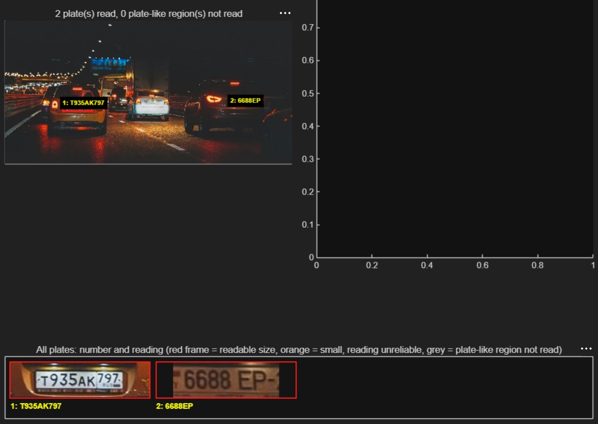
Your night traffic photo with the situation "Many cars at night": boxes in the photo, the crops with their readings under it. / သင့်ညဘက်ယာဉ်ကြောပိတ်ဓာတ်ပုံတွင် "Many cars at night" အခြေအနေဖြင့် - ဓာတ်ပုံထဲရှိ ဘောက်စ်များနှင့် အောက်ရှိ ဖတ်ရလဒ်ပါသော နံပါတ်ပြားပုံများ။
Measured limits. (1) A plate needs about 100 pixels of width to be read. Plates of 20 to 30 pixels, such as the far cars of your day traffic photo (640 x 480), are neither found nor read, with or without a filter (enlarging 2 and 3 times, gamma and local equalisation were tried): only a photo with more pixels helps. (2) On your night traffic photo (1710 x 855, three plates) 2 are found: the Mini T935AK797 (right with every filter) and the dark SUV 6688 EP-2 (read 6688EP, 6688EP2 with local equalisation or enlarging 3 times, otherwise 6688F or 6688H); the white car (plate about 70 pixels) is missed. (3) On the 16 test photos a region with a plate-SVM score of at least -0.3 contained the plate in 14 of 16 photos, also when they were shrunk to 40 %, with about 1 false region per photo; the grey dashed boxes use this rule.
တိုင်းတာထားသော ကန့်သတ်ချက်များ။ (၁) နံပါတ်ပြားတစ်ခုကို ဖတ်ရန် အကျယ် pixel ၁၀၀ ခန့် လိုသည်။ သင့်နေ့ဘက်ယာဉ်ကြောပိတ်ဓာတ်ပုံ (၆၄၀ x ၄၈၀) ၏ ဝေးသောကားများကဲ့သို့ pixel ၂၀ မှ ၃၀ ရှိသော နံပါတ်ပြားများကို ဖီလ်တာပါ/မပါ မတွေ့၊ မဖတ်နိုင်ပါ (၂ ဆ၊ ၃ ဆချဲ့ခြင်း၊ gamma၊ local equalisation စမ်းခဲ့သည်) - pixel ပိုများသော ဓာတ်ပုံသာ ကူညီသည်။ (၂) သင့်ညဘက်ယာဉ်ကြောပိတ်ဓာတ်ပုံ (၁၇၁၀ x ၈၅၅၊ နံပါတ်ပြား ၃ ခု) တွင် ၂ ခုတွေ့သည် - Mini T935AK797 (ဖီလ်တာအားလုံးဖြင့် မှန်) နှင့် မှောင်သော SUV 6688 EP-2 (6688EP ဟုဖတ်၊ local equalisation သို့မဟုတ် ၃ ဆချဲ့လျှင် 6688EP2၊ မဟုတ်လျှင် 6688F သို့မဟုတ် 6688H)၊ ကားဖြူ (နံပါတ်ပြား pixel ၇၀ ခန့်) ကို လွတ်သွားသည်။ (၃) စမ်းသပ်ဓာတ်ပုံ ၁၆ ပုံတွင် plate-SVM ရမှတ် -0.3 နှင့်အထက်ရှိသော နေရာတွင် နံပါတ်ပြားပါသည်မှာ ၁၆ ပုံထဲ ၁၄ ပုံ (၄၀% သို့ ချုံ့ထားသော်လည်း)၊ ပုံတစ်ပုံလျှင် မှားသောနေရာ ၁ ခုခန့်ပါသည်၊ မီးခိုးရောင်မျဉ်းပြတ်ဘောက်စ်များက ဤစည်းမျဉ်းကို သုံးသည်။
New in the recogniser (tested on the 16 held-out photos, exact plates before -> after: clean 8 -> 8, lit night 7 -> 8, very dark 6 -> 6, shrunk to 40 % 4 -> 4; characters 74.6 -> 74.6 %, 62.3 -> 68.6 %, 61.9 -> 61.9 %, 58.0 -> 59.0 %): (a) a dark photo is also searched in a locally equalised copy, so you do not have to choose a filter for the search; (b) when fewer than 4 characters can be cut out of a plate, characters that touch each other are cut apart at the thin necks between them, with a top-hat that removes the glare of lamps; (c) plate-like regions that could not be read are reported. These additions did no harm and gave one more plate on the lit night photos, but they did not make your dark.jpg readable: its plate (about 75 pixels, red light, lamp glare fused with the characters) is now located ("plate too small") but not read. Honest conclusion: night plates under about 100 pixels with glare are beyond this recogniser; a closer or sharper photo, or training with your own labelled night photos (markPlateBoxes, then train_real_model), is what helps.
ပရိုဂရမ်အသစ် ထပ်တိုးချက်များ (ထိန်းထားသော စမ်းသပ်ဓာတ်ပုံ ၁၆ ပုံပေါ်တွင် စမ်းသပ်ပြီး အတိအကျမှန်သောပုံ မတိုင်မီ -> ပြီးနောက် - သန့်ရှင်း ၈ -> ၈၊ မီးထွန်းညဘက် ၇ -> ၈၊ အလွန်မှောင် ၆ -> ၆၊ ၄၀% ချုံ့ ၄ -> ၄၊ စာလုံးမှန်ကန်မှု ၇၄.၆ -> ၇၄.၆%၊ ၆၂.၃ -> ၆၈.၆%၊ ၆၁.၉ -> ၆၁.၉%၊ ၅၈.၀ -> ၅၉.၀%) - (က) မှောင်သောဓာတ်ပုံကို local equalisation လုပ်ထားသော မိတ္တူထဲတွင်လည်း ရှာသဖြင့် ရှာဖွေရန် ဖီလ်တာ ရွေးစရာမလိုပါ၊ (ခ) နံပါတ်ပြားတစ်ခုမှ စာလုံး ၄ လုံးအောက်သာ ဖြတ်ယူနိုင်လျှင် တစ်ဦးနှင့်တစ်ဦး ထိနေသော စာလုံးများကို ကြားရှိ ပါးသောနေရာတွင် ဖြတ်ခွဲပေးပြီး မီးအလင်းရောင်ပြန်ကို ဖယ်ရှားသော top-hat သုံးသည်၊ (ဂ) မဖတ်နိုင်သော နံပါတ်ပြားနှင့်တူသည့်နေရာများကိုလည်း ပြသည်။ ဤထပ်တိုးချက်များသည် မထိခိုက်ဘဲ မီးထွန်းညဘက်ပုံများတွင် နံပါတ်ပြား ၁ ခု ပိုဖတ်နိုင်စေသည်၊ သို့သော် သင့် dark.jpg ကို မဖတ်နိုင်အောင်သာ ကျန်ခဲ့သည် - ၎င်း၏ နံပါတ်ပြား (pixel ၇၅ ခန့်၊ အနီရောင်မီး၊ မီးအလင်းရောင်ပြန်နှင့် စာလုံးများ ပေါင်းနေသည်) ကို ယခု တွေ့သည် ("plate too small") သို့သော် မဖတ်နိုင်ပါ။ ရိုးရိုးသားသားဆိုရလျှင် pixel ၁၀၀ အောက်ရှိ မီးအလင်းရောင်ပြန်ပါသော ညဘက်နံပါတ်ပြားများသည် ဤစနစ်၏ အစွမ်းအစထက် ကျော်လွန်သည် - ပိုနီးသော သို့မဟုတ် ပိုပြတ်သားသော ဓာတ်ပုံ၊ သို့မဟုတ် ကိုယ်ပိုင်ညဘက်ဓာတ်ပုံများ (markPlateBoxes၊ ထို့နောက် train_real_model) ဖြင့် လေ့ကျင့်ခြင်းက ကူညီသည်။
Automatic enlargement of small plate crops (new, on by default): a plate narrower than 160 pixels is enlarged with bicubic interpolation to about 160 pixels and sharpened with an unsharp mask before its characters are cut out, which is the "Small or far plate" chain applied to the plate only. On the 16 test photos shrunk to 40 % it raised the exact plates from 4 to 7 (characters 59.0 -> 64.1 %); on clean photos nothing changed (8 of 16, 74.6 %); on the night-lit small photos nothing changed either (5 of 16); a target of 220 pixels gave only 5, and bicubic cutting alone cost two clean plates.
သေးငယ်သော နံပါတ်ပြားပုံကို အလိုအလျောက်ချဲ့ခြင်း (အသစ်၊ ပုံသေဖွင့်ထားသည်) - အကျယ် pixel ၁၆၀ အောက် နံပါတ်ပြားကို စာလုံးများမဖြတ်မီ bicubic ဖြင့် pixel ၁၆၀ ခန့်အထိ ချဲ့ပြီး unsharp mask ဖြင့် ပြတ်သားစေသည် - ဤသည်မှာ နံပါတ်ပြားတစ်ခုတည်းပေါ် သုံးသော "Small or far plate" ဖီလ်တာစီစဉ်မှုပင်ဖြစ်သည်။ ၄၀% သို့ ချုံ့ထားသော စမ်းသပ်ဓာတ်ပုံ ၁၆ ပုံတွင် အတိအကျမှန်သော ပုံ ၄ မှ ၇ ပုံသို့ တိုးစေသည် (စာလုံး ၅၉.၀ မှ ၆၄.၁%)၊ သန့်ရှင်းသောပုံများတွင် ဘာမှမပြောင်းလဲ (၁၆ ပုံထဲ ၈၊ ၇၄.၆%)၊ ညဘက်မီးထွန်း သေးငယ်သောပုံများတွင်လည်း မပြောင်း (၅ ပုံ)၊ pixel ၂၂၀ ပစ်မှတ်က ၅ ပုံသာရပြီး bicubic ဖြင့်သာ ဖြတ်လျှင် သန့်ရှင်းသော နံပါတ်ပြား ၂ ခု ဆုံးရှုံးသည်။
Your second set of photos (Find ALL, the model the app loads; the true texts were read by eye from the photos). White BMW, Virginia plate M3PLUS1 (72 px wide): read W3PLUS1, 6 of 7 characters right (M3PLU before the automatic enlargement of small plate crops). Indian taxi, yellow plate KA53C6932 (127 px): read KA53C6332, one character wrong (9 -> 3). Scooter, two-line plate KA02K / X9181 (rows 36 px wide): only the upper row is found, and only after enlarging 2 times (read K402X or K402K for KA02K); the lower row is not found. Night street, Tesla with a California plate 1RAM11 (182 px): found only after enlarging 2 times, read 1RAI1; the other two plates (about 60 and 50 px) are not found. Night traffic: T935AK797 right, 6688EP for 6688EP2, the white car missed. Black BMW M4 (Georgia plate, about 35 px wide) and the other cars of that photo: nothing found. False reading: the sign "NO TURN ON RED" is read as TURN. Why plates are missed or misread: the characters of plates under about 100 px have only 6 to 10 pixels of height, and the character SVM was trained on 2.5 thousand characters of mostly car plates from other countries (9/3 and M/W are typical mistakes); more labelled photos of your own (markPlateBoxes, then train_real_model) are the way to improve that.
သင့်ဒုတိယအစုံ ဓာတ်ပုံများ (Find ALL၊ ပရိုဂရမ်ဖွင့်ထားသော model၊ အမှန်စာသားများကို ဓာတ်ပုံထဲမှ မျက်စိဖြင့်ဖတ်ထားသည်)။ ဗာဂျီးနီးယားနံပါတ်ပြားပါ ဘီအမ်ဒဗ္ဗလျူအဖြူ M3PLUS1 (အကျယ် pixel ၇၂) - W3PLUS1 ဟုဖတ်၊ စာလုံး ၇ လုံးထဲ ၆ လုံးမှန် (သေးငယ်သော နံပါတ်ပြားကို အလိုအလျောက်မချဲ့မီ M3PLU)။ အိန္ဒိယတက္ကစီ၊ အဝါရောင်နံပါတ်ပြား KA53C6932 (pixel ၁၂၇) - KA53C6332 ဟုဖတ်၊ စာလုံးတစ်လုံးမှား (9 -> 3)။ စကူတာ၊ နှစ်ကြောင်းနံပါတ်ပြား KA02K / X9181 (တစ်ကြောင်းလျှင် pixel ၃၆) - အပေါ်ကြောင်းကိုသာ တွေ့ပြီး ၂ ဆချဲ့မှသာ တွေ့သည် (KA02K ကို K402X သို့မဟုတ် K402K ဟုဖတ်)၊ အောက်ကြောင်းကို မတွေ့ပါ။ ညဘက်လမ်း၊ ကယ်လီဖိုးနီးယားနံပါတ်ပြား 1RAM11 ပါ Tesla (pixel ၁၈၂) - ၂ ဆချဲ့မှသာ တွေ့ပြီး 1RAI1 ဟုဖတ်၊ ကျန်နံပါတ်ပြားနှစ်ခု (pixel ၆၀ နှင့် ၅၀ ခန့်) ကို မတွေ့ပါ။ ညဘက်ယာဉ်ကြောပိတ် - T935AK797 မှန်၊ 6688EP2 အစား 6688EP၊ ကားဖြူ လွတ်သွား။ ဘီအမ်ဒဗ္ဗလျူအနက် M4 (ဂျော်ဂျီယာနံပါတ်ပြား၊ အကျယ် pixel ၃၅ ခန့်) နှင့် ထိုဓာတ်ပုံရှိ အခြားကားများ - ဘာမှမတွေ့ပါ။ မှားဖတ်မှု - "NO TURN ON RED" ဆိုင်းဘုတ်ကို TURN ဟုဖတ်မိသည်။ နံပါတ်ပြား လွတ်သွားခြင်း/မှားဖတ်ခြင်း အကြောင်းရင်း - pixel ၁၀၀ ခန့်အောက် နံပါတ်ပြားများ၏ စာလုံးများသည် အမြင့် pixel ၆ မှ ၁၀ သာရှိပြီး စာလုံး SVM ကို အခြားနိုင်ငံများမှ ကားနံပါတ်ပြားများအများစု၏ စာလုံး ၂.၅ ထောင်ဖြင့် လေ့ကျင့်ထားသည် (9/3 နှင့် M/W တို့သည် ပုံမှန်အမှားများ)၊ ကိုယ်ပိုင် label တပ်ထားသော ဓာတ်ပုံများ (markPlateBoxes၊ ထို့နောက် train_real_model) ထပ်ထည့်ခြင်းက ပိုကောင်းစေသည်။
dark.jpg is a real night photo with a small plate (about 75 pixels wide) lit red by the tail lights. None of the filters makes the program read MH14 TCF 735: without a filter and with local equalisation it finds no plate; with enlarging + sharpening it finds a plate-like region but reads only "4TC5". The plate has too few pixels. The honest advice for this kind of photo is a closer or sharper photo (the plate should be at least 100 pixels wide). The pictures show the red outline of the region the program accepted, if any.
dark.jpg သည် အကျယ် pixel ၇၅ ခန့်သာရှိသော သေးငယ်သည့် နံပါတ်ပြားကို နောက်မီးများက အနီရောင်ထိုးထားသော တကယ့်ညဘက်ဓာတ်ပုံဖြစ်သည်။ မည်သည့်ဖီလ်တာကမျှ MH14 TCF 735 ကို ပရိုဂရမ်ဖတ်နိုင်အောင် မလုပ်ပေးနိုင်ပါ - ဖီလ်တာမသုံးလျှင်နှင့် local equalisation ဖြင့် နံပါတ်ပြားမတွေ့ပါ၊ ချဲ့ခြင်း + ပြတ်သားစေခြင်းဖြင့် နံပါတ်ပြားနှင့်တူသောနေရာကို တွေ့သော်လည်း "4TC5" ဟုသာ ဖတ်သည်။ နံပါတ်ပြားတွင် pixel နည်းလွန်းသည်။ ဤကဲ့သို့ ဓာတ်ပုံအတွက် ရိုးရိုးသားသားအကြံမှာ ပိုနီးသော သို့မဟုတ် ပိုပြတ်သားသော ဓာတ်ပုံရိုက်ရန်ဖြစ်သည် (နံပါတ်ပြားအကျယ် pixel ၁၀၀ အနည်းဆုံးရှိသင့်သည်)။ ပုံများတွင် ပရိုဂရမ်လက်ခံသော နေရာရှိလျှင် အနီရောင်မျဉ်းဖြင့် ပြထားသည်။
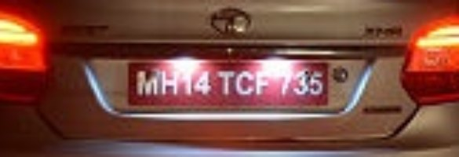
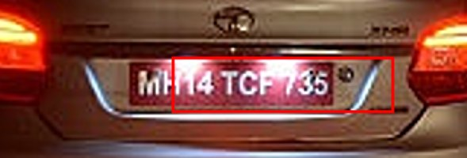
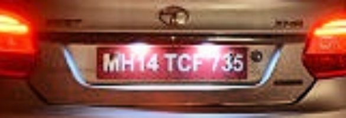
Every filter was run alone, with the start values the panel put into its box at the time of the test, on the 16 clean test photos. Doing nothing reads 8 of 16 plates exactly (74.6 % of the characters). Clean photos have no problem for a filter to cure, so a filter cannot be expected to win here; the table shows which filters do harm when a beginner adds them by accident. No filter raised an error or returned values outside 0 to 1.
ဖီလ်တာတစ်ခုချင်းစီကို စမ်းသပ်ချိန်က panel ၏ အကွက်ထဲ ထည့်ပေးသော စတင်တန်ဖိုးများဖြင့် သီးသန့်၊ သန့်ရှင်းသော စမ်းသပ်ဓာတ်ပုံ ၁၆ ပုံပေါ်တွင် ပြေးခဲ့သည်။ ဘာမှမလုပ်ဘဲ ၁၆ ပုံထဲ ၈ ပုံ အတိအကျမှန် (စာလုံး ၇၄.၆%)။ သန့်ရှင်းသောပုံများတွင် ဖီလ်တာကုသစရာ ပြဿနာ မရှိသဖြင့် ဖီလ်တာက အနိုင်ရမည်ဟု မမျှော်လင့်ရပါ - ဇယားက စတင်သူတစ်ဦး မှားယွင်း၍ ထည့်မိလျှင် မည်သည့်ဖီလ်တာက ထိခိုက်စေသည်ကို ပြသည်။ မည်သည့်ဖီလ်တာမျှ error မပေးခဲ့ပါ၊ တန်ဖိုး ၀ မှ ၁ ပြင်ပသို့ မထွက်ခဲ့ပါ။
| Filter / ဖီလ်တာ | Exact plates / အတိအကျမှန်သော | Plates found / တွေ့သော နံပါတ်ပြား | Characters correct / စာလုံးမှန်ကန်မှု | Verdict / ဆုံးဖြတ်ချက် |
|---|---|---|---|---|
| no filter / ဖီလ်တာမသုံးပါ | 8 / 16 | 13 / 16 | 74.6 % | |
| Resize (change the resolution) | 7 / 16 | 14 / 16 | 67.3 % | slightly worse / အနည်းငယ် ပိုဆိုး |
| Convolution with my own kernel | 7 / 16 | 13 / 16 | 69.0 % | slightly worse / အနည်းငယ် ပိုဆိုး |
| Mean (box) filter | 4 / 16 | 12 / 16 | 60.2 % | worse / ပိုဆိုး |
| Gaussian filter | 4 / 16 | 11 / 16 | 56.0 % | worse / ပိုဆိုး |
| Median filter | 7 / 16 | 13 / 16 | 69.9 % | slightly worse / အနည်းငယ် ပိုဆိုး |
| Bilateral filter (edge-preserving) | 6 / 16 | 13 / 16 | 67.5 % | worse / ပိုဆိုး |
| Unsharp masking | 7 / 16 | 13 / 16 | 67.3 % | slightly worse / အနည်းငယ် ပိုဆိုး |
| Laplacian sharpening | 7 / 16 | 12 / 16 | 63.1 % | slightly worse / အနည်းငယ် ပိုဆိုး |
| Deblur (Richardson-Lucy) | 10 / 16 | 12 / 16 | 72.5 % | about the same / အနီးစပ်ဆုံး တူ |
| Gamma correction | 7 / 16 | 13 / 16 | 68.0 % | slightly worse / အနည်းငယ် ပိုဆိုး |
| Brightness / contrast | 9 / 16 | 13 / 16 | 70.1 % | about the same / အနီးစပ်ဆုံး တူ |
| Contrast stretching | 8 / 16 | 13 / 16 | 75.7 % | about the same / အနီးစပ်ဆုံး တူ |
| Histogram equalisation | 8 / 16 | 13 / 16 | 69.6 % | slightly worse / အနည်းငယ် ပိုဆိုး |
| Local histogram equalisation (CLAHE) | 9 / 16 | 13 / 16 | 70.7 % | about the same / အနီးစပ်ဆုံး တူ |
| Illumination correction | 8 / 16 | 13 / 16 | 69.0 % | slightly worse / အနည်းငယ် ပိုဆိုး |
| Frequency low-pass (noise) | 4 / 16 | 12 / 16 | 58.9 % | worse / ပိုဆိုး |
| Frequency band-pass | 3 / 16 | 11 / 16 | 48.8 % | worse / ပိုဆိုး |
Verdict: "worse" = at least 2 plates fewer than doing nothing; "slightly worse" = 1 plate fewer or at least 5 points fewer correct characters; everything else "about the same", because with 16 photos a difference of one or two plates is noise (Richardson-Lucy 10, CLAHE 9 and brightness/contrast 9 plates are inside that noise: their characters were not better). Harmful at the old start values: Gaussian 5 x 5 (4 of 16), box filter (4), frequency low-pass 0.3 (4), band-pass 0.03..0.5 (3) and bilateral (6; it is made for grainy photos, not clean ones). After this test the start values were made milder and re-tested the same way: Gaussian 3 x 3, sigma 0.8: 7 of 16 (73.7 % of the characters); low-pass 0.5: 7 of 16 (66.4 %), 0.7: 6 of 16; band-pass 0.01..0.8: 9 of 16 (71.1 %), 0.02..0.9: 6 of 16.
ဆုံးဖြတ်ချက် - "worse" = ဘာမှမလုပ်ခြင်းထက် နံပါတ်ပြား အနည်းဆုံး ၂ ခု နည်း၊ "slightly worse" = ၁ ခု နည်း သို့မဟုတ် မှန်သောစာလုံး ၅ point နည်း၊ ကျန်သည်များ "about the same" ဖြစ်သည် - ဓာတ်ပုံ ၁၆ ပုံသာဖြစ်သဖြင့် ၁ ခု ၂ ခု ကွာခြားခြင်းသည် noise ဖြစ်သည် (Richardson-Lucy ၁၀၊ CLAHE ၉၊ brightness/contrast ၉ ပုံသည် ထို noise အတွင်းဖြစ်ပြီး စာလုံးမှန်ကန်မှု မပိုကောင်းခဲ့ပါ)။ စတင်တန်ဖိုးဟောင်းများဖြင့် ထိခိုက်စေသည်မှာ Gaussian 5 x 5 (၁၆ ပုံထဲ ၄)၊ box filter (၄)၊ frequency low-pass 0.3 (၄)၊ band-pass 0.03..0.5 (၃)၊ bilateral (၆ - အမှုန့်ပါသောပုံများအတွက်ဖြစ်ပြီး သန့်ရှင်းသောပုံအတွက် မဟုတ်)။ ဤစမ်းသပ်မှုပြီးနောက် စတင်တန်ဖိုးများကို ပိုမျှတအောင် ပြောင်းပြီး ထိုနည်းတူ ပြန်စမ်းခဲ့သည် - Gaussian 3 x 3, sigma 0.8 - ၁၆ ပုံထဲ ၇ (စာလုံး ၇၃.၇%)၊ low-pass 0.5 - ၇ (၆၆.၄%)၊ 0.7 - ၆၊ band-pass 0.01..0.8 - ၉ (၇၁.၁%)၊ 0.02..0.9 - ၆။
How it works / အလုပ်လုပ်ပုံ
Changes the number of pixels. Enlarging makes new pixels by interpolation: nearest copies the closest pixel (blocky), bilinear averages 4 neighbours (smooth), bicubic uses 16 neighbours (smoothest, sharpest edges). Shrinking first blurs a little and then drops pixels, so it removes some noise and makes everything faster.
ပုံထဲက pixel အရေအတွက်ကို ပြောင်းပေးသည်။ ချဲ့လျှင် pixel အသစ်များကို အနီးအနားရှိ pixel များမှ တွက်ချက်၍ ဖြည့်သည် - nearest = အနီးဆုံး pixel ကို ကူးယူ (လေးထောင့်ကွက်များ ပေါ်)၊ bilinear = အနီး ၄ ခု၏ ပျမ်းမျှ (ချောမွေ့)၊ bicubic = အနီး ၁၆ ခုသုံး (အချောဆုံး၊ အနားသတ် ပြတ်သားဆုံး)။ ချုံ့လျှင် အနည်းငယ်ဝါးပြီးမှ pixel များကို ဖယ်ရှားသဖြင့် noise အနည်းငယ်လျော့ပြီး အလုပ်မြန်လာသည်။
Good for / ကောင်းသည့်နေရာ
Small or far plates: enlarge 2 times with bicubic and sharpen slightly. Measured on photos shrunk to 40 %: 4 -> 5 plates of 16 with the enlargement, 6 with enlargement + unsharp masking (+5.2 points of characters).
သေးငယ်သော သို့မဟုတ် ဝေးသော နံပါတ်ပြား - bicubic ဖြင့် ၂ ဆချဲ့ပြီး နည်းနည်း ပြတ်သားစေပါ။ ၄၀% သို့ ချုံ့ထားသော ဓာတ်ပုံများတွင် တိုင်းတာမှု - ချဲ့ခြင်းဖြင့် ၁၆ ပုံထဲ ၄ မှ ၅ ပုံ၊ ချဲ့ပြီး unsharp masking သုံးလျှင် ၆ ပုံ (စာလုံးမှန်ကန်မှု +၅.၂ point)။
Be careful / သတိထားရန်
It cannot create detail that the camera never recorded: a plate only 40 pixels wide stays unreadable. Do NOT shrink big photos to save time: shrinking to 0.5 cost 3 of 16 plates (8 -> 5).
ကင်မရာက မမှတ်မိခဲ့သော အသေးစိတ်ကို ဖန်တီး၍မရပါ - အကျယ် pixel ၄၀ သာရှိသော နံပါတ်ပြားသည် ဖတ်၍မရနိုင်ပါ။ အချိန်ချွေတာရန် ပုံကြီးများကို မချုံ့ပါနှင့် - ၀.၅ ဆ ချုံ့လျှင် ၁၆ ပုံထဲ ၃ ပုံ ဆုံးရှုံးသည် (၈ မှ ၅)။
Numbers: / ဂဏန်းများ: Scale 0.25 to 4 (start 1.5); Interp. 1 nearest, 2 bilinear, 3 bicubic (start 3)
How it works / အလုပ်လုပ်ပုံ
A small matrix (the kernel) slides over the photo. Every output pixel is the weighted sum of the neighbours under the kernel. A kernel whose numbers add up to 1 keeps the brightness (blur, sharpen); a kernel that adds up to 0 (Laplacian, Sobel) keeps only changes, i.e. edges. The border pixels need padding (see the Border setting): replicate repeats the edge pixels, symmetric mirrors them, zero fills with black.
kernel ဟုခေါ်သော matrix သေးသေးလေးကို ဓာတ်ပုံပေါ်တွင် ရွှေ့သွားသည်။ ထွက်လာသော pixel တစ်ခုစီသည် kernel အောက်ရှိ အနီးအနား pixel များကို kernel ၏ အလေးချိန်ဖြင့် မြှောက်ပေါင်းထားသော တန်ဖိုးဖြစ်သည်။ kernel ၏ ဂဏန်းများ ပေါင်းလဒ် ၁ ဖြစ်လျှင် အလင်းအမှောင် မပြောင်း (ဝါး၊ ပြတ်သား)၊ ပေါင်းလဒ် ၀ ဖြစ်လျှင် (Laplacian, Sobel) ပြောင်းလဲမှုများ (edges) သာ ကျန်ရစ်သည်။ ဓာတ်ပုံအစွန်း pixel များအတွက် padding လိုအပ်သည် (Border setting) - replicate = အစွန်း pixel ကို ထပ်ကူး၊ symmetric = မှန်ပြောင်း၊ zero = အနက်ဖြင့် ဖြည့်။
Good for / ကောင်းသည့်နေရာ
Learning how filters work; your own mild sharpening, for example [0 -1 0; -1 5 -1; 0 -1 0].
ဖီလ်တာများ အလုပ်လုပ်ပုံကို လေ့လာရန်၊ ကိုယ်ပိုင် အပေါ့စား ပြတ်သားစေသော kernel (ဥပမာ [0 -1 0; -1 5 -1; 0 -1 0])။
Be careful / သတိထားရန်
Edge kernels (sum 0) turn the photo almost black: use them only to look at edges, not before recognition.
edge kernel များ (ပေါင်းလဒ် ၀) သည် ပုံကို အနက်ရောင်နီးပါးဖြစ်စေသည် - edges ကြည့်ရန်သာ သုံးပါ၊ မှတ်သားမီ မသုံးပါနှင့်။
Numbers: / ဂဏန်းများ: no numbers; the matrix is typed under "Own kernel" (odd size, e.g. [0 -1 0; -1 5 -1; 0 -1 0])
How it works / အလုပ်လုပ်ပုံ
Replaces every pixel by the plain average of its k x k neighbours. Weak noise is averaged away, but every edge is smeared as well.
pixel တစ်ခုစီကို အနီးရှိ k x k pixel များ၏ ရိုးရိုးပျမ်းမျှဖြင့် အစားထိုးသည်။ အားနည်းသော noise ပျောက်သွားသော်လည်း အနားသတ်များ အားလုံးလည်း ဝါးသွားသည်။
Good for / ကောင်းသည့်နေရာ
Hardly anything: very light grain only.
ဘာမှမရှိသလောက်ပင် - အမှုန့်အလွန်ပါးသောပုံများအတွက်သာ။
Be careful / သတိထားရန်
Blurs every edge. Measured: even the smallest window (3 x 3) read only 4 of 16 clean test plates (60.2 % of the characters). The median or bilateral filter is better.
edge အားလုံးကို ဝါးစေသည်။ တိုင်းတာမှု - အသေးဆုံးဝင်းဒိုး (3 x 3) ပင် သန့်ရှင်းသော စမ်းသပ်ပုံ ၁၆ ပုံထဲ ၄ ပုံသာ ဖတ်နိုင် (စာလုံး ၆၀.၂%)။ median သို့မဟုတ် bilateral filter က ပိုကောင်းသည်။
Numbers: / ဂဏန်းများ: Window 3 to 15 (start 3)
How it works / အလုပ်လုပ်ပုံ
A weighted average: the centre pixel counts most, far neighbours little (bell-shaped weights, width sigma). Smoother and less blocky than the box average.
အလေးချိန်ပါသော ပျမ်းမျှ - အလယ် pixel ကို အများဆုံး၊ အဝေး pixel များကို နည်းနည်းသာ ထည့်တွက်သည် (ခေါင်းလောင်းပုံ အလေးချိန်၊ အကျယ် = sigma)။ box ပျမ်းမျှထက် ပိုညီညာပြီး လေးထောင့်ကွက်ပေါ်ခြင်း နည်းသည်။
Good for / ကောင်းသည့်နေရာ
Almost nothing in this task: it is only for steps that dislike tiny noise. If you must use it, take the mild start values (3 x 3, sigma 0.8).
ဤအလုပ်တွင် ဘာမှမရှိသလောက်ပင် - အသေးစား noise ကို မကြိုက်သော အဆင့်များအတွက်သာ။ မဖြစ်မနေ သုံးရလျှင် မျှတသော စတင်တန်ဖိုး (3 x 3, sigma 0.8) ကို သုံးပါ။
Be careful / သတိထားရန်
Blurs the thin strokes of small characters. Measured on the clean test photos: the old start values (5 x 5, sigma 1) read 4 of 16 plates instead of 8; the new mild ones (3 x 3, sigma 0.8) read 7 of 16. On noisy photos a 5 x 5 Gaussian also cost 3 plates.
စာလုံးသေးများ၏ မျဉ်းပါးများကို ဝါးစေသည်။ သန့်ရှင်းသော စမ်းသပ်ပုံများတွင် တိုင်းတာမှု - စတင်တန်ဖိုးဟောင်း (5 x 5, sigma 1) က ၁၆ ပုံထဲ ၈ အစား ၄ ပုံသာ ဖတ်နိုင်၊ အသစ် (3 x 3, sigma 0.8) က ၇ ပုံ။ noise ပါသောပုံများတွင် 5 x 5 Gaussian က ၃ ပုံ ဆုံးရှုံးစေခဲ့သည်။
Numbers: / ဂဏန်းများ: Window 3 to 21 (start 3); Sigma 0.5 to 6 (start 0.8)
How it works / အလုပ်လုပ်ပုံ
Sorts the k x k neighbours by brightness and takes the middle value. One isolated white or black dot can never be the middle value, so it disappears; edges stay fairly sharp.
k x k အနီးအနား pixel များကို အလင်းအမှောင်အလိုက် စီပြီး အလယ်ဆုံးတန်ဖိုးကို ယူသည်။ တစ်ခုတည်းသော အဖြူ/အနက်စက်ကလေးသည် အလယ်တန်ဖိုး မဖြစ်နိုင်သဖြင့် ပျောက်သွားပြီး အနားသတ်များ ပြတ်သားဆဲဖြစ်သည်။
Good for / ကောင်းသည့်နေရာ
Salt-and-pepper noise: isolated white and black dots (dead sensor pixels, transmission errors, JPEG sparkle). Measured: +2 plates of 16 at 5 % dots.
salt-and-pepper noise - ခွဲထွက်နေသော အဖြူ/အနက်စက်ကလေးများ (ကင်မရာ pixel ပျက်၊ ပို့ရာတွင် အမှား၊ JPEG စက်ကလေးများ)။ တိုင်းတာမှု - စက်ကလေး ၅% တွင် ၁၆ ပုံထဲ ၂ ပုံ ပိုမှန်သည်။
Be careful / သတိထားရန်
On ordinary grain it rounds off thin strokes: on Gaussian noise it cost 2 of 16 plates.
သာမန် အမှုန့် (grain) တွင် ပါးသော စာကြောင်းများကို ဝိုင်းသွားစေသည် - Gaussian noise တွင် ၁၆ ပုံထဲက ၂ ပုံ ဆုံးရှုံးစေသည်။
Numbers: / ဂဏန်းများ: Window 3 to 9 (start 3)
How it works / အလုပ်လုပ်ပုံ
Like a Gaussian filter, but a neighbour whose brightness is very different (the other side of an edge) gets almost no weight. Flat areas are smoothed, the edges of the characters stay sharp.
Gaussian နှင့်တူသော်လည်း အလင်းအမှောင် အလွန်ကွာသော အနီးအနား pixel (အနားသတ်၏ တစ်ဖက်ခြမ်း) ကို အလေးချိန် မပေးသလောက်ဖြစ်သည်။ ညီညာသောနေရာများ ချောမွေ့ပြီး စာလုံးအနားသတ်များ ပြတ်သားဆဲဖြစ်သည်။
Good for / ကောင်းသည့်နေရာ
Grainy photos of normal brightness (Gaussian noise). Measured: 8 -> 9 plates of 16 at sigma 0.06, while Gaussian 5 x 5 gave 5 and median 6.
ပုံမှန်အလင်းရှိပြီး အမှုန့်ပါသော ဓာတ်ပုံများ (Gaussian noise)။ တိုင်းတာမှု - sigma 0.06 တွင် ၁၆ ပုံထဲ ၈ မှ ၉ ပုံ၊ Gaussian 5 x 5 က ၅၊ median က ၆။
Be careful / သတိထားရန်
On clean photos it costs plates (6 of 16 instead of 8 at the start values): use it only when the photo is really grainy. On simulated night photos it did not help either (lit street 7 -> 6, very dark 6 -> 5; with a fixed sigma_r 4, which is why sigma_r now follows the grey range of the photo). Slow on big photos.
သန့်ရှင်းသောပုံများတွင် နံပါတ်ပြား ဆုံးရှုံးစေသည် (စတင်တန်ဖိုးဖြင့် ၈ အစား ၆ ပုံ) - ပုံ အမှန်တကယ် အမှုန့်ပါမှသာ သုံးပါ။ ဖန်တီးထားသော ညဘက်ပုံများတွင်လည်း မကူညီပါ (မီးထွန်းလမ်း ၇ မှ ၆၊ အလွန်မှောင် ၆ မှ ၅၊ sigma_r ပုံသေဖြင့် ၄၊ ထို့ကြောင့် sigma_r သည် ဓာတ်ပုံ၏ grey range အတိုင်း လိုက်ပြောင်းသည်)။ ပုံကြီးများတွင် နှေးသည်။
Numbers: / ဂဏန်းများ: Spatial sigma 0.5 to 2 (start 1.5); Range sigma 0.05 to 0.4 (start 0.15, relative to the grey range of the photo)
How it works / အလုပ်လုပ်ပုံ
Subtracts a blurred copy from the photo and adds the difference back: J = I + amount x (I - Gaussian(I)). Edges get steeper, so the strokes of the characters stand out.
ပုံမှ ဝါးထားသော ကော်ပီကို နုတ်ပြီး ကွာခြားချက်ကို ပြန်ပေါင်းထည့်သည် - J = I + amount x (I - Gaussian(I))။ အနားသတ်များ ပိုမတ်လာသဖြင့် စာလုံးကြောင်းများ ပိုထင်ရှားလာသည်။
Good for / ကောင်းသည့်နေရာ
Slightly soft photos and small plates after enlarging (amount 1, sigma 1.2).
နည်းနည်းပျော့နေသော ပုံများနှင့် ချဲ့ပြီးနောက် နံပါတ်ပြားသေးများ (amount 1, sigma 1.2)။
Be careful / သတိထားရန်
It also amplifies noise and draws bright and dark halos next to edges. Strong blur is not repaired by it.
noise ကိုလည်း တိုးစေပြီး အနားသတ်ဘေးတွင် အလင်း/အမှောင် အရောင်ဝိုင်းများ ဖြစ်စေသည်။ ပြင်းထန်သော ဝါးမှုကို မပြင်နိုင်ပါ။
Numbers: / ဂဏန်းများ: Amount 0 to 4 (start 1.5); Blur sigma 0.5 to 5 (start 1.5)
How it works / အလုပ်လုပ်ပုံ
Subtracts the Laplacian (second derivative) of the photo. It reacts to every sudden change of brightness, so fine detail and noise are both emphasised.
ဓာတ်ပုံ၏ Laplacian (ဒုတိယ derivative) ကို နုတ်သည်။ အလင်းအမှောင် ရုတ်တရက်ပြောင်းသည့်နေရာတိုင်းကို တုံ့ပြန်သဖြင့် အသေးစိတ်နှင့် noise နှစ်ခုလုံး ပိုထင်ရှားလာသည်။
Good for / ကောင်းသည့်နေရာ
Quick sharpening of a clean, slightly soft photo.
သန့်ရှင်းပြီး နည်းနည်းပျော့သော ဓာတ်ပုံကို အမြန် ပြတ်သားစေရန်။
Be careful / သတိထားရန်
Noisier than unsharp masking: use it only on clean photos.
unsharp masking ထက် noise ပိုများသည် - သန့်ရှင်းသော ဓာတ်ပုံတွင်သာ သုံးပါ။
Numbers: / ဂဏန်းများ: Amount 0 to 3 (start 1)
How it works / အလုပ်လုပ်ပုံ
Richardson-Lucy deconvolution: it assumes the photo is the true picture blurred by a Gaussian of width sigma and searches, step by step (iterations), for the sharp picture that would give exactly this photo when blurred.
Richardson-Lucy deconvolution - ဓာတ်ပုံသည် စစ်မှန်သောပုံကို sigma အကျယ်ရှိ Gaussian ဖြင့် ဝါးထားခြင်းဖြစ်သည်ဟု ယူဆပြီး ဝါးလိုက်လျှင် ဤဓာတ်ပုံထွက်လာမည့် ပြတ်သားသောပုံကို အဆင့်ဆင့် (iterations) ရှာသည်။
Good for / ကောင်းသည့်နေရာ
Out-of-focus blur of about 1 to 2 pixels (sigma 1.5, 10 iterations), in theory. In the tests it was not reliable: on clean photos 10 of 16 plates (but 72.5 % of the characters), on blurred photos 5 of 16, the same as doing nothing.
သီအိုရီအရ ၁ မှ ၂ pixel ခန့် ပုံဝါးခြင်း (sigma 1.5, iterations 10) အတွက်။ စမ်းသပ်ချက်များတွင် မယုံကြည်ရပါ - သန့်ရှင်းသောပုံများတွင် ၁၆ ပုံထဲ ၁၀ (သို့သော် စာလုံး ၇၂.၅%)၊ ဝါးသောပုံများတွင် ၅ ပုံ၊ ဘာမှမလုပ်ခြင်းနှင့် တူသည်။
Be careful / သတိထားရန်
Not for motion blur. Too many iterations amplify noise and draw ripples next to edges. Measured: no reliable gain on blurred test photos.
လှုပ်ရှားမှုကြောင့် ဝါးသော ပုံအတွက် မဟုတ်ပါ။ iterations များလွန်းလျှင် noise တိုးပြီး အနားသတ်ဘေးတွင် လှိုင်းကွက်များ ဖြစ်သည်။ တိုင်းတာမှု - ဝါးထားသော စမ်းသပ်ဓာတ်ပုံများတွင် ယုံကြည်ရသော တိုးတက်မှု မတွေ့ရပါ။
Numbers: / ဂဏန်းများ: Blur sigma 0.5 to 4 (start 1.5); Iterations 3 to 30 (start 10)
How it works / အလုပ်လုပ်ပုံ
J = I to the power gamma. A gamma below 1 brightens the dark parts a lot and the bright parts little; above 1 darkens the photo.
J = I ၏ gamma ထပ်ကိန်း။ gamma ၁ အောက်ဆိုလျှင် မှောင်သောအပိုင်းများကို အများကြီးလင်းစေပြီး လင်းသောအပိုင်းများကို နည်းနည်းသာ ပြောင်းသည်၊ ၁ ထက်ကြီးလျှင် ဓာတ်ပုံပိုမှောင်သည်။
Good for / ကောင်းသည့်နေရာ
To look at dark photos (gamma 0.5 to 0.7) or washed-out photos (1.3 to 1.6). On simulated night photos gamma 0.6 changed the plate count by -1 / 0 and the characters by +4.2 / -1.8 points: no clear gain, because the program repairs the brightness itself.
မှောင်သောပုံ (gamma 0.5 မှ 0.7) သို့မဟုတ် ဖြူလွန်းသောပုံ (1.3 မှ 1.6) ကို ကြည့်ရန်။ စမ်းသပ်ထားသော ညဘက်ဓာတ်ပုံများတွင် gamma 0.6 က ပုံအရေအတွက်ကို -၁ / ၀၊ စာလုံးမှန်ကန်မှုကို +၄.၂ / -၁.၈ point ပြောင်းစေသည် - ပရိုဂရမ်က အလင်းအမှောင်ကို ကိုယ်တိုင်ပြင်ပြီးသားဖြစ်သဖြင့် ထင်ရှားသော တိုးတက်မှု မရှိပါ။
Be careful / သတိထားရန်
The program already repairs brightness by itself; a second gamma on top over-corrects (it cost 2 of 16 plates on shaded photos).
ပရိုဂရမ်က အလင်းအမှောင်ကို ကိုယ်တိုင်ပြင်ပြီးသားဖြစ်သဖြင့် gamma ထပ်သုံးလျှင် ပိုလွန်သွားတတ်သည် (အရိပ်ပါသော ပုံများတွင် ၁၆ ပုံထဲက ၂ ပုံ ဆုံးရှုံးစေခဲ့သည်)။
Numbers: / ဂဏန်းများ: Gamma 0.3 to 3 (start 0.7); below 1 brightens
How it works / အလုပ်လုပ်ပုံ
J = gain x (I - 0.5) + 0.5 + offset. A gain above 1 pushes dark and bright levels apart (more contrast); the offset moves everything brighter or darker.
J = gain x (I - 0.5) + 0.5 + offset။ gain ၁ ထက်ကြီးလျှင် အမှောင်နှင့်အလင်း အဆင့်များ ပိုကွာလာသည် (contrast တိုး)၊ offset ကတော့ ပုံတစ်ခုလုံးကို ပိုလင်း/ပိုမှောင်ရွှေ့သည်။
Good for / ကောင်းသည့်နေရာ
Slightly flat photos.
နည်းနည်း ပြားချပ်ချပ်ဖြစ်နေသော ဓာတ်ပုံများ။
Be careful / သတိထားရန်
Bright areas can burn out to pure white (clipping) and the lost detail is gone for good.
တောက်ပသောနေရာများ ဖြူလွန်းသွားနိုင်ပြီး (clipping) ဆုံးရှုံးသော အသေးစိတ်ကို ပြန်မရနိုင်ပါ။
Numbers: / ဂဏန်းများ: Contrast 0.3 to 3 (start 1.4); Brightness -0.3 to 0.3 (start 0)
How it works / အလုပ်လုပ်ပုံ
Finds the darkest 1 % and the brightest 1 % of the grey levels and stretches them to full black and full white.
ဓာတ်ပုံ၏ အမှောင်ဆုံး ၁% နှင့် အလင်းဆုံး ၁% အဆင့်များကို ရှာပြီး အနက်အပြည့်နှင့် အဖြူအပြည့်သို့ ဆွဲဆန့်သည်။
Good for / ကောင်းသည့်နေရာ
Hazy, foggy or rainy photos where everything looks grey. Measured: +1.8 points of character accuracy on photos squeezed to 30 % contrast.
မြူ၊ မိုးကြောင့် အားလုံး မီးခိုးရောင်ဖြစ်နေသော ဓာတ်ပုံများ။ တိုင်းတာမှု - contrast ၃၀% သို့ ချုံ့ထားသော ပုံများတွင် စာလုံးမှန်ကန်မှု ၁.၈ point တိုးသည်။
Be careful / သတိထားရန်
It stretches the noise too, and the program already stretches the contrast by itself when it is very low.
noise ကိုပါ ဆွဲဆန့်သည်၊ contrast အလွန်နည်းလျှင် ပရိုဂရမ်ကိုယ်တိုင်လည်း ဆွဲဆန့်ပေးသည်။
Numbers: / ဂဏန်းများ: Low % 0 to 20 (start 1); High % 80 to 100 (start 99)
How it works / အလုပ်လုပ်ပုံ
Re-maps the grey levels so that all levels are used about equally often (one mapping for the whole photo). A strong contrast boost.
ဓာတ်ပုံတစ်ခုလုံးအတွက် mapping တစ်ခုတည်းဖြင့် grey level အားလုံးကို အကြိမ်ရေ ညီမျှနီးပါး သုံးစေရန် ပြန်ချိန်သည်။ contrast ကို ပြင်းပြင်းထန်ထန် တိုးစေသည်။
Good for / ကောင်းသည့်နေရာ
Very flat photos, mainly to look at them.
အလွန်ပြားချပ်ချပ်ဖြစ်သော ဓာတ်ပုံများ (အဓိကအားဖြင့် ကြည့်ရန်)။
Be careful / သတိထားရန်
Exaggerates noise. One mapping for everything: a bright lamp next to a dark car gives a poor result (use local equalisation instead).
noise ကို ကြီးစေသည်။ mapping တစ်ခုတည်းဖြစ်သဖြင့် လင်းသောမီးနှင့် မှောင်သောကားတွဲနေလျှင် ရလဒ်ညံ့သည် (ထိုအခါ local equalisation သုံးပါ)။
Numbers: / ဂဏန်းများ: no numbers
How it works / အလုပ်လုပ်ပုံ
Contrast-limited adaptive histogram equalisation: the photo is cut into tiles, every tile gets its own equalising mapping (limited by the clip limit so flat areas do not explode), and neighbouring tiles are blended. Dark corners and bright spots both gain contrast.
Contrast-limited adaptive histogram equalisation - ဓာတ်ပုံကို အကွက်ငယ်များ (tiles) ပိုင်းပြီး အကွက်တစ်ခုစီအတွက် ကိုယ်ပိုင် equalise ပြုလုပ်သည် (clip limit ဖြင့် ကန့်သတ်ထားသဖြင့် ညီညာသောနေရာများ မပေါက်ကွဲ)၊ ကပ်လျက်အကွက်များကို ပေါင်းစပ်သည်။ မှောင်သောထောင့်နှင့် တောက်ပသောအစက် နှစ်ခုလုံး contrast တိုးလာသည်။
Good for / ကောင်းသည့်နေရာ
Uneven light where a normal-brightness photo has a dark side and a bright side (typical: 8 tiles, clip limit 3). Measured on the angled plates: 3 of 6 read exactly instead of 1 of 6 (9 instead of 8 of 16 overall, but -3.9 points of characters): a hint, not a proof.
ပုံမှန်အလင်းရှိသော ဓာတ်ပုံတွင် မှောင်သောဘက်နှင့် လင်းသောဘက် ရှိနေသည့် အလင်းမညီမျှမှု (ပုံမှန် - tiles ၈၊ clip limit ၃)။ စောင်းနေသော နံပါတ်ပြားများတွင် တိုင်းတာမှု - ၆ ပုံထဲ ၃ ပုံ မှန် (ဖီလ်တာမသုံးလျှင် ၁ ပုံ)၊ စုစုပေါင်း ၁၆ ပုံထဲ ၉ ပုံ (၈ ပုံအစား) ဖြစ်သော်လည်း စာလုံးမှန်ကန်မှု ၃.၉ point ကျ - အရိပ်အမြွက်သာ၊ သက်သေမဟုတ်ပါ။
Be careful / သတိထားရန်
Amplifies noise in dark flat areas: on simulated night photos it cost plates (lit street 7 -> 6, very dark 6 -> 5 and -15 points of characters). Lower the clip limit if you try it on a noisy photo.
မှောင်ပြီးညီညာသောနေရာတွင် noise ကို တိုးစေသည် - စမ်းသပ်ထားသော ညဘက်ဓာတ်ပုံများတွင် ပုံများ ဆုံးရှုံးစေသည် (မီးထွန်းလမ်း ၇ မှ ၆ ပုံ၊ အလွန်မှောင်သောပုံ ၆ မှ ၅ ပုံ၊ စာလုံးမှန်ကန်မှု ၁၅ point ကျ)။ noise ပါသောပုံတွင် စမ်းလျှင် clip limit ကို လျှော့ပါ။
Numbers: / ဂဏန်းများ: Tiles 2 to 16 (start 8); Clip limit 1 to 10 (start 3)
How it works / အလုပ်လုပ်ပုံ
Estimates the slowly changing light as a very wide Gaussian blur and divides the photo by it, so a shadow across the photo or the gradient of a lamp disappears while the letters stay.
ဖြည်းဖြည်းပြောင်းသော အလင်းကို အလွန်ကျယ်သော Gaussian ဝါးထားသည့်ပုံအဖြစ် ခန့်မှန်းပြီး ဓာတ်ပုံကို ၎င်းဖြင့် စားသည်။ ထို့ကြောင့် ဓာတ်ပုံပေါ်ရှိ အရိပ် သို့မဟုတ် မီးအလင်း၏ တဖြည်းဖြည်းပြောင်းမှု ပျောက်သွားပြီး စာလုံးများ ကျန်ရစ်သည်။
Good for / ကောင်းသည့်နေရာ
A shadow across the plate or one side of the photo darker than the other. Measured: +2 plates of 16 (but -1.7 points of characters).
နံပါတ်ပြားပေါ်ဖြတ်သော အရိပ် သို့မဟုတ် ဓာတ်ပုံ၏ တစ်ဖက်ခြမ်း ပိုမှောင်နေခြင်း။ တိုင်းတာမှု - ၁၆ ပုံထဲ ၂ ပုံ ပိုမှန် (စာလုံးမှန်ကန်မှုမူ ၁.၇ point လျော့)။
Be careful / သတိထားရန်
A big dark object (the car body) is 'corrected' too, and bright sky above a dark road gets flattened. The program cannot tell a shadow from scene content, so it never suggests this filter by itself.
အမှောင်ကြီးသော အရာ (ကားကိုယ်ထည်) ကိုပါ 'ပြင်'ပစ်သည်၊ မှောင်သောလမ်းပေါ်က လင်းသောကောင်းကင်ကိုလည်း ပြားစေသည်။ အရိပ်နှင့် မြင်ကွင်း၏ အစိတ်အပိုင်းကို ပရိုဂရမ်က မခွဲခြားနိုင်သဖြင့် ဤဖီလ်တာကို ကိုယ်တိုင် မအကြံပြုပါ။
Numbers: / ဂဏန်းများ: Blur sigma 10 to 100 (start 40); Strength 0 to 1 (start 1)
How it works / အလုပ်လုပ်ပုံ
The photo is turned into its frequencies with the Fourier transform; the fast-changing (high-frequency) parts above the cut-off are removed (Butterworth shape), then the photo is transformed back. It is a smoothing filter designed in the frequency domain.
Fourier transform ဖြင့် ဓာတ်ပုံကို ကြိမ်နှုန်းများအဖြစ် ပြောင်းပြီး cut-off အထက်ရှိ မြန်မြန်ပြောင်းသော (high-frequency) အပိုင်းများကို ဖယ်ရှားကာ (Butterworth ပုံစံ) ပြန်ပြောင်းသည်။ ကြိမ်နှုန်းဒိုမိန်းတွင် ဒီဇိုင်းပြုလုပ်ထားသော smoothing filter တစ်မျိုးဖြစ်သည်။
Good for / ကောင်းသည့်နေရာ
Regular fine patterns such as the pixel grid of a screen when a monitor was photographed. Better still: open the original file instead of a photo of the screen. Not measured on real screen photos.
မော်နီတာကို ဓာတ်ပုံရိုက်ထားသည့်အခါ screen ၏ pixel grid ကဲ့သို့ ပုံမှန်သေးငယ်သော ပုံစံများ။ ပိုကောင်းသည်မှာ - screen ကို ဓာတ်ပုံမရိုက်ဘဲ မူရင်းဖိုင်ကို ဖွင့်ခြင်း။ တကယ့် screen ဓာတ်ပုံများပေါ်တွင် မတိုင်းထားပါ။
Be careful / သတိထားရန်
Blurs the characters and draws ripples next to edges (ringing). Measured on clean test photos: cut-off 0.3 read 4 of 16 plates, 0.5 (the start value) 7 of 16, 0.7 6 of 16, against 8 without a filter.
စာလုံးများကို ဝါးစေပြီး edge ဘေးတွင် လှိုင်းကွေးများ ဖြစ်စေသည် (ringing)။ သန့်ရှင်းသော စမ်းသပ်ပုံများပေါ် တိုင်းတာမှု - cut-off 0.3 က ၁၆ ပုံထဲ ၄၊ 0.5 (စတင်တန်ဖိုး) က ၇၊ 0.7 က ၆ ပုံ၊ ဖီလ်တာမသုံးလျှင် ၈ ပုံ။
Numbers: / ဂဏန်းများ: Cut-off 0.05 to 0.8 (start 0.5)
How it works / အလုပ်လုပ်ပုံ
Keeps only a band of frequencies: the slow shading (low frequencies) and the very fine noise (high frequencies) are removed, the letter strokes lie in between and stay.
ကြိမ်နှုန်းတစ်ပိုင်းတစ်စ (band) ကိုသာ ထားသည် - ဖြည်းဖြည်းပြောင်းသော အရိပ် (low frequency) နှင့် အလွန်သေးသော noise (high frequency) ကို ဖယ်ပြီး စာလုံးကြောင်းများသည် ကြားထဲရှိသဖြင့် ကျန်ရစ်သည်။
Good for / ကောင်းသည့်နေရာ
Uneven light and fine noise together, if the cut-offs are wide. With the start values 0.01 and 0.8 it read 9 of 16 clean test plates (71.1 %), about as good as doing nothing.
cut-off များ ကျယ်လျှင် အလင်းမညီမျှမှုနှင့် အသေးစား noise နှစ်ခုလုံး။ စတင်တန်ဖိုး 0.01 နှင့် 0.8 ဖြင့် သန့်ရှင်းသော စမ်းသပ်ပုံ ၁၆ ပုံထဲ ၉ ပုံ (၇၁.၁%) ဖတ်နိုင်ပြီး ဘာမှမလုပ်ခြင်းနှင့် အနီးစပ်ဆုံးတူသည်။
Be careful / သတိထားရန်
A high cut-off removes the fine detail of the characters: the old start values (0.03 and 0.5) read only 3 of 16 plates (48.8 %), and 0.02 with 0.9 read 6 of 16. Keep the low cut-off at 0.01 and the high one at 0.8.
cut-off မြင့်လျှင် စာလုံးများ၏ အသေးစိတ်ကို ဖယ်ရှားသည် - စတင်တန်ဖိုးဟောင်း (0.03 နှင့် 0.5) က ၁၆ ပုံထဲ ၃ ပုံသာ (၄၈.၈%) ဖတ်နိုင်ပြီး 0.02 နှင့် 0.9 က ၆ ပုံ။ low cut-off ကို 0.01၊ high ကို 0.8 ထားပါ။
Numbers: / ဂဏန်းများ: Low cut-off 0.01 to 0.3 (start 0.01); High cut-off 0.2 to 0.9 (start 0.8)
Look at the text under the buttons after "Recognise on filtered photo": it says whether the original photo reads. If it does, the filters made the photo worse: press "Remove filters", or choose a situation and "Use recommended". If the original does not read either, the filters are not the cause: the plate is too small (under about 90 pixels wide), too dark, burnt out or hidden. For a small plate choose "Small or far plate"; if it is small and dark, a closer photo is the only real cure.
"Recognise on filtered photo" နှိပ်ပြီးနောက် ခလုတ်များအောက်ရှိ စာသားကို ကြည့်ပါ - မူရင်းပုံက ဖတ်နိုင်သလားဆိုသည်ကို ပြောပြသည်။ ဖတ်နိုင်လျှင် ဖီလ်တာကြောင့် ပုံပိုဆိုးသွားခြင်းဖြစ်သည် - "Remove filters" ကိုနှိပ်ပါ၊ သို့မဟုတ် အခြေအနေကိုရွေးပြီး "Use recommended" ကိုနှိပ်ပါ။ မူရင်းပုံကလည်း မဖတ်နိုင်လျှင် ဖီလ်တာက အကြောင်းရင်းမဟုတ်ပါ - နံပါတ်ပြားသည် သေးလွန်း (အကျယ် pixel ၉၀ ခန့်အောက်)၊ မှောင်လွန်း၊ ဖြူလွန်းသွားခြင်း သို့မဟုတ် ဝှက်ထားခြင်းဖြစ်သည်။ သေးငယ်လျှင် "Small or far plate" ကိုရွေးပါ၊ သေးပြီးမှောင်လျှင် ပိုနီးအောင် ပြန်ရိုက်ခြင်းသာ တကယ့်ကုသနည်းဖြစ်သည်။
Edge kernels (the presets Edge (Laplacian) and Sobel have the sum 0) and the frequency band-pass turn the photo into an edge map or a flat grey picture. The app prints "WARNING: the filtered photo is almost completely black, white or flat". Use "Sharpen" as your own kernel, or remove the filter.
Edge kernel များ (Edge (Laplacian) နှင့် Sobel preset များ၏ ပေါင်းလဒ်သည် ၀ ဖြစ်သည်) နှင့် frequency band-pass တို့က ဓာတ်ပုံကို edge map သို့မဟုတ် ပြားသော မီးခိုးရောင်ပုံ ဖြစ်စေသည်။ ပရိုဂရမ်က "WARNING: the filtered photo is almost completely black, white or flat" ဟု ပြသည်။ ကိုယ်ပိုင် kernel အဖြစ် "Sharpen" ကို သုံးပါ၊ သို့မဟုတ် ဖီလ်တာကို ဖယ်ပါ။
The percentage is only the agreement of the character SVMs with each other; it says nothing about whether the box is a plate or the reading is right. Plates narrower than about 100 pixels are unreliable (orange box). Compare the reading with other filters and with the original.
ရာခိုင်နှုန်းသည် စာလုံး SVM များ အချင်းချင်း တူညီမှုကိုသာ ပြသည် - ဘောက်စ်သည် နံပါတ်ပြားဟုတ်မဟုတ်၊ အဖတ်မှန်မမှန် မပြောပါ။ အကျယ် pixel ၁၀၀ ခန့်အောက် နံပါတ်ပြားများသည် မယုံကြည်ရပါ (လိမ္မော်ရောင်ဘောက်စ်)။ အဖတ်ကို အခြားဖီလ်တာများနှင့် မူရင်းပုံနှင့် နှိုင်းယှဉ်ကြည့်ပါ။
A second SVM (the character-validity SVM) now refuses regions whose pieces look like streaks and not like characters: the message is "characters look like streaks or noise". If a wrong box still appears, use "Pick car..." (tab 4 Plate) to search only inside one car. In the test, 37 of 43 non-plate regions were refused and 13 of the plates kept: it is not perfect.
ဒုတိယ SVM (character-validity SVM) က အစိတ်အပိုင်းများသည် စာလုံးနှင့်မတူဘဲ အစင်းများနှင့်တူသော နေရာများကို ယခု ပယ်ချသည် - "characters look like streaks or noise" ဟု ပြသည်။ မှားသောဘောက်စ် ဆက်ပေါ်လျှင် "Pick car..." (tab 4 Plate) ဖြင့် ကားတစ်စီးအတွင်းသာ ရှာခိုင်းပါ။ စမ်းသပ်မှုတွင် နံပါတ်ပြားမဟုတ်သော နေရာ ၄၃ ခုထဲ ၃၇ ခုကို ပယ်ချပြီး နံပါတ်ပြား ၁၃ ခုကို ထိန်းထားနိုင်သည် - ပြီးပြည့်စုံမှု မရှိပါ။
.jfif files and JPEGs without an extension open now. MATLAB cannot read .webp, .avif and .jxl: open them in Paint and use File > Save as > JPEG picture, or take a screenshot (Win+Shift+S) and save it as PNG.
.jfif ဖိုင်များနှင့် extension မပါသော JPEG များကို ယခု ဖွင့်နိုင်ပြီ။ MATLAB သည် .webp, .avif, .jxl ကို မဖတ်နိုင်ပါ - Paint ဖြင့်ဖွင့်ပြီး File > Save as > JPEG picture ဖြင့် သိမ်းပါ၊ သို့မဟုတ် screenshot (Win+Shift+S) ရိုက်ပြီး PNG အဖြစ် သိမ်းပါ။
Test photos: the 16 held-out photos of the project (images/real, split = test), never used for training; the numbers come from the models trained without them (lpr_svm_model_real_dev.mat). Exact plate = every character right. Simulated night: darkened photo, orange lamp colour cast, two glows and Gaussian noise 0.03 (simulateNight). Small: the photo shrunk to 40 %. Dots: salt-and-pepper 5 %. Grain: Gaussian noise sigma 0.06. Blur: Gaussian sigma 2. Low contrast: contrast squeezed to 30 %. Shadow: right side 4 times darker. Perspective: the whole photo is turned about the vertical axis (yaw) or the horizontal axis (pitch) with a homography, camera 1.6 photo widths away. These are simulations; real photographs taken at an angle differ (lens distortion, other backgrounds). The example marked "own" is your photo dark.jpg (folder Desktop\car license plate), which was not used to choose any setting. The full tables are in README.md.
စမ်းသပ်ဓာတ်ပုံများ - project ၏ ထိန်းထားသော ဓာတ်ပုံ ၁၆ ပုံ (images/real, split = test)၊ လေ့ကျင့်ရာတွင် လုံးဝမသုံးခဲ့ပါ၊ ကိန်းဂဏန်းများသည် ၎င်းတို့မပါဘဲ လေ့ကျင့်ထားသော model (lpr_svm_model_real_dev.mat) မှ ရလာသည်။ အတိအကျမှန်သော နံပါတ်ပြား = စာလုံးအားလုံးမှန်။ ညဘက် (ဖန်တီးထား) - မှောင်အောင်လုပ်၊ လိမ္မော်ရောင်မီးအရောင်၊ မီးအလင်းနှစ်ခုနှင့် Gaussian noise 0.03 (simulateNight)။ သေးငယ် - ဓာတ်ပုံကို ၄၀% သို့ ချုံ့။ အစက် - salt-and-pepper 5%။ အမှုန့် - Gaussian noise sigma 0.06။ ဝါး - Gaussian sigma 2။ Contrast နိမ့် - contrast ကို 30% သို့ ညှစ်။ အရိပ် - ညာဘက်ခြမ်း ၄ ဆ မှောင်။ ရိုက်ထောင့် - ဓာတ်ပုံတစ်ခုလုံးကို homography ဖြင့် ဒေါင်လိုက်ဝင်ရိုး (yaw) သို့မဟုတ် အလျားလိုက်ဝင်ရိုး (pitch) ပတ်၍ လှည့်ထားသည်၊ ကင်မရာသည် ဓာတ်ပုံအကျယ် ၁.၆ ဆ အကွာတွင်ရှိသည်။ ၎င်းတို့သည် ဖန်တီးထားသော စမ်းသပ်မှုများဖြစ်ပြီး ထောင့်စောင်းမှ တကယ်ရိုက်သော ဓာတ်ပုံများသည် (မှန်ဘီလူး ပုံပျက်မှု၊ နောက်ခံကွဲပြားမှု) ကွာခြားနိုင်သည်။ "own" ဟု မှတ်ထားသော ဥပမာသည် သင့်ဓာတ်ပုံ dark.jpg (Desktop\car license plate ဖိုလ်ဒါ) ဖြစ်ပြီး မည်သည့် setting ရွေးရန်မျှ မသုံးခဲ့ပါ။ ဇယားအပြည့်အစုံသည် README.md တွင် ရှိသည်။